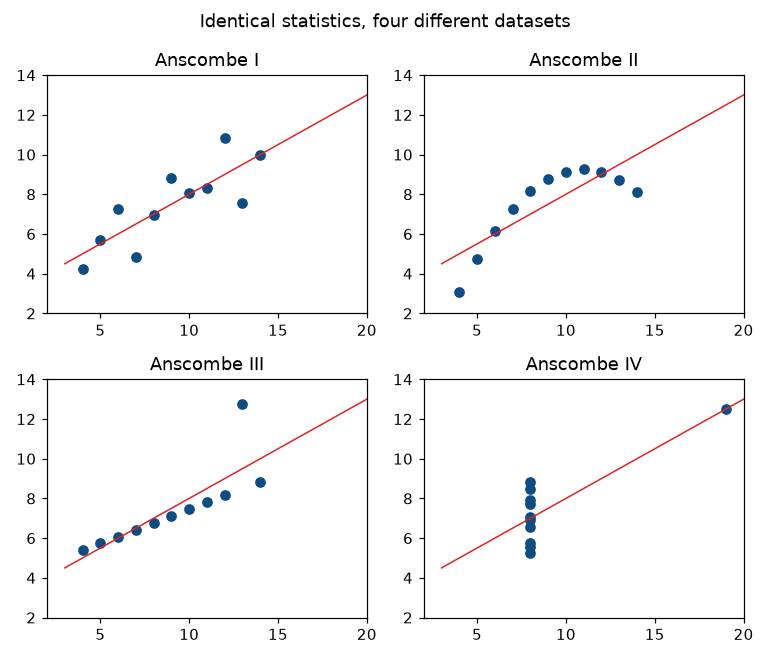
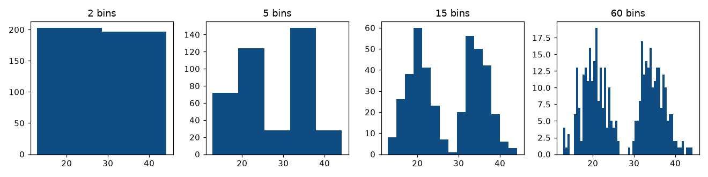
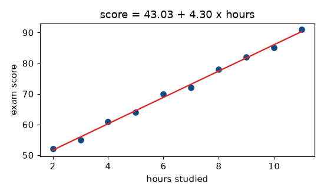

12 experiments, each set out as 1. Question, 2. Aim, 3. Steps, 4. Programme, 5. Execution and Results.
Code lives in labs/course-12a-ml/.
NOTE
Everything in this course runs. scikit-learn, NumPy, pandas, SciPy and
matplotlib are all installed, so all 12 practicals execute and every
figure in these notes is asserted by
tools/data-science/run_ml_labs.py. Under 5. Execution and Results is what each one
printed, on the versions in output/VERSIONS.txt; Experiment 4's charts are shown as it drew
them.
There is no "NOT EXECUTED" file anywhere in Machine Learning. Nothing this course needs is blocked by the verification environment.
Eleven courses run every experiment: Problem Solving Using C, Python Programming and Data Structures, Data Science with R, Web Technologies, Data Mining, Python for Data Analysis and Visualization, Document Oriented Database, Machine Learning, Big Data Technologies, Artificial Intelligence and Time Series Analysis and Forecasting. (Updated October 2026: this said five; R, MongoDB and WEKA became installable here, and the Tkinter programs run under a virtual display. Then nine; the Hadoop stack and SWI-Prolog became installable too.)
Every script fixes random_state, so the numbers below reproduce on your
machine. If you get something different, something differs — that is the
point of fixing the seed.
pip install -r tools/requirements.txt
python3 tools/data-science/run_ml_labs.py| Check | Asserts |
|---|---|
| Experiment 6 against Statistical Foundations for Data Science | scikit-learn reproduces Statistical Foundations for Data Science's hand-computed regression — slope 4.3030, intercept 43.0303, R² 0.9958, prediction at 7.5 = 75.3030 |
| Experiments 8 and 9 against Data Mining | The same entropy and information gain (0.2467) and the same Naive Bayes posteriors (0.005291 and 0.020571) |
If the two courses ever disagree, one of them is wrong, and the suite says so. That is the point of reusing the datasets rather than inventing new ones.
| Name | What | Why |
|---|---|---|
STUDY |
Statistical Foundations for Data Science's ten (hours, score) pairs | Cross-course verification, and small enough to check by hand |
iris |
150 flowers, 4 features, 3 species | Small, clean, famous — and the same data Data Mining used in WEKA |
churn |
400 customers, 15% positive | Built, not loaded, so the base rate is exactly known — which is what makes Unit 2's accuracy argument measurable |
Import and export data in CSV, Excel, JSON and Parquet with pandas.
Round-trip a frame through each format, and catch what each one silently changes.
THE TRAPS
Every format has a way of silently changing your data, and each one is demonstrated failing and then fixed:
| Trap | What happens |
|---|---|
to_csv() with the default index |
Comes back as a junk Unnamed: 0 column |
| CSV stores text | "001", "002", "010" returns as [1, 2, 10] — leading zeros gone |
| Dates through CSV | Come back as strings, not dates |
JSON orient |
Five orientations produce five different files; read with the wrong one and the frame is transposed or empty |
Fixes asserted: index=False, dtype={"id": str}, parse_dates=[...],
and Parquet, which preserves every dtype exactly. Also nrows, usecols
and chunksize for files that will not fit in memory.
"""Experiment 1 — Import and export data with pandas.
The first practical, and the one that decides whether the rest of the course is
frustrating. Every format has a way of silently changing your data on the round
trip, and this script demonstrates each one failing and then fixing it.
"""
import io
import json
import pathlib
import tempfile
import pandas as pd
from fixtures import STUDY, churn
TMP = pathlib.Path(tempfile.mkdtemp(prefix="ml_lab1_"))
def csv_round_trip():
path = TMP / "study.csv"
STUDY.to_csv(path, index=False)
back = pd.read_csv(path)
assert back.shape == STUDY.shape == (10, 2)
assert list(back.columns) == ["hours", "score"]
assert back["score"].sum() == STUDY["score"].sum() == 710
assert back.equals(STUDY)
print(f" CSV round trip: {back.shape}, score total {back['score'].sum()} -- identical")
def index_false_matters():
"""to_csv(index=True) adds a phantom column that read_csv turns into data."""
with_index = TMP / "with_index.csv"
STUDY.to_csv(with_index) # index=True is the DEFAULT
back = pd.read_csv(with_index)
assert back.shape == (10, 3), back.shape
assert back.columns[0] == "Unnamed: 0", list(back.columns)
fixed = pd.read_csv(with_index, index_col=0)
assert fixed.shape == (10, 2)
assert fixed.equals(STUDY)
print(f" to_csv() with the default index -> read back as {back.shape}, "
f"first column '{back.columns[0]}'")
print(" 'Unnamed: 0' is the commonest junk column in data science.")
print(" Write with index=False, or read with index_col=0")
def dtypes_are_not_preserved_by_csv():
"""CSV is text. Types are GUESSED on the way back in."""
df = pd.DataFrame({"id": ["001", "002", "010"],
"flag": [True, False, True],
"when": pd.to_datetime(["2026-01-15", "2026-02-10", "2026-04-05"])})
path = TMP / "types.csv"
df.to_csv(path, index=False)
back = pd.read_csv(path)
# The zero-padded id became an integer and lost its padding.
assert str(df["id"].dtype) == "str" or df["id"].dtype == object
assert back["id"].tolist() == [1, 2, 10], back["id"].tolist()
assert back["id"].tolist() != df["id"].tolist()
# The date became a plain string. (In pandas 3 the string dtype prints as
# "str" rather than the old "object" -- assert the property, not the name.)
assert not pd.api.types.is_datetime64_any_dtype(back["when"])
assert isinstance(back["when"].iloc[0], str), back["when"].iloc[0]
fixed = pd.read_csv(path, dtype={"id": str}, parse_dates=["when"])
assert fixed["id"].tolist() == ["001", "002", "010"]
assert pd.api.types.is_datetime64_any_dtype(fixed["when"])
print(f" zero-padded id '001','002','010' -> read back as {back['id'].tolist()}")
print(f" dates -> dtype {back['when'].dtype} (text, not a date)")
print(" with dtype={'id': str}, parse_dates=['when'] -> both correct")
print(" CSV stores TEXT. Every type is re-guessed on read, and a")
print(" pin code, phone number or account id loses its leading zeros")
def excel_and_multiple_sheets():
path = TMP / "data.xlsx"
with pd.ExcelWriter(path) as xl:
STUDY.to_excel(xl, sheet_name="study", index=False)
churn().head(20).to_excel(xl, sheet_name="churn", index=False)
sheets = pd.read_excel(path, sheet_name=None) # None -> a dict of ALL
assert set(sheets) == {"study", "churn"}
assert sheets["study"].shape == (10, 2)
assert sheets["churn"].shape == (20, 4)
one = pd.read_excel(path, sheet_name="study")
assert one.equals(STUDY)
print(f" Excel: {len(sheets)} sheets -> {[f'{k} {v.shape}' for k, v in sheets.items()]}")
print(" sheet_name=None returns a DICT of every sheet. Unlike CSV,")
print(" Excel preserves dtypes, which is its one real advantage")
def json_orientations():
"""The 'orient' argument changes the file completely."""
small = STUDY.head(3)
shapes = {}
for orient in ("records", "columns", "index", "split", "values"):
text = small.to_json(orient=orient)
shapes[orient] = len(text)
if orient in ("records", "columns", "index", "split"):
back = pd.read_json(io.StringIO(text), orient=orient)
assert back.shape == small.shape, (orient, back.shape)
assert json.loads(small.to_json(orient="records"))[0] == {"hours": 2, "score": 52}
assert list(json.loads(small.to_json(orient="columns"))) == ["hours", "score"]
print(" the same 3 rows, five JSON orientations:")
for orient, size in shapes.items():
print(f" orient='{orient}':{'':<{10 - len(orient)}} {size} chars")
print(" 'records' is the one APIs use -- a list of objects. You must")
print(" pass the SAME orient to read_json, or the frame comes back")
print(" transposed or empty")
def parquet_preserves_everything():
"""The format to use between Python programs."""
df = pd.DataFrame({"id": ["001", "002"],
"when": pd.to_datetime(["2026-01-15", "2026-02-10"]),
"flag": [True, False],
"value": [1.5, 2.5]})
path = TMP / "data.parquet"
try:
df.to_parquet(path, index=False)
except (ImportError, ValueError) as exc:
print(f" parquet unavailable ({type(exc).__name__}) -- skipped")
return
back = pd.read_parquet(path)
assert back["id"].tolist() == ["001", "002"], "leading zeros SURVIVE"
assert pd.api.types.is_datetime64_any_dtype(back["when"]), "dates survive"
assert back["flag"].dtype == bool
assert back.equals(df)
csv_size = len(df.to_csv(index=False).encode())
parquet_size = path.stat().st_size
print(f" Parquet: every dtype preserved, frame identical on round trip")
print(f" csv {csv_size} bytes, parquet {parquet_size} bytes "
f"(parquet wins only on LARGE data -- it has a header)")
print(" columnar, typed, compressed. Use it between programs;")
print(" use CSV only when a human or a foreign tool must read it")
def reading_a_subset_of_a_large_file():
"""usecols and nrows -- what you do when the file will not fit."""
big = churn(n=400)
path = TMP / "big.csv"
big.to_csv(path, index=False)
head = pd.read_csv(path, nrows=5)
assert head.shape == (5, 4)
two_cols = pd.read_csv(path, usecols=["tenure_months", "churned"])
assert two_cols.shape == (400, 2), two_cols.shape
chunks = list(pd.read_csv(path, chunksize=150))
assert [len(c) for c in chunks] == [150, 150, 100]
assert sum(len(c) for c in chunks) == 400
print(f" nrows=5 -> {head.shape}")
print(f" usecols=[2 columns] -> {two_cols.shape}")
print(f" chunksize=150 -> {[len(c) for c in chunks]} rows per chunk")
print(" read the head FIRST to see the columns, then usecols to load")
print(" only what you need. chunksize when it will not fit in memory")
def main():
print("Experiment 1 -- Importing and exporting data with pandas")
# Step 1: Write a CSV and read it back
csv_round_trip()
# Step 2: See what the default index does
index_false_matters()
# Step 3: See which types a CSV loses
dtypes_are_not_preserved_by_csv()
# Step 4: Write and read Excel, with several sheets
excel_and_multiple_sheets()
# Step 5: Compare the JSON orientations
json_orientations()
# Step 6: Round-trip through Parquet
parquet_preserves_everything()
# Step 7: Read part of a large file
reading_a_subset_of_a_large_file()
if __name__ == "__main__":
main()OUTPUT
Experiment 1 -- Importing and exporting data with pandas
CSV round trip: (10, 2), score total 710 -- identical
to_csv() with the default index -> read back as (10, 3), first column 'Unnamed: 0'
'Unnamed: 0' is the commonest junk column in data science.
Write with index=False, or read with index_col=0
zero-padded id '001','002','010' -> read back as [1, 2, 10]
dates -> dtype str (text, not a date)
with dtype={'id': str}, parse_dates=['when'] -> both correct
CSV stores TEXT. Every type is re-guessed on read, and a
pin code, phone number or account id loses its leading zeros
Excel: 2 sheets -> ['study (10, 2)', 'churn (20, 4)']
sheet_name=None returns a DICT of every sheet. Unlike CSV,
Excel preserves dtypes, which is its one real advantage
the same 3 rows, five JSON orientations:
orient='records': 70 chars
orient='columns': 60 chars
orient='index': 82 chars
orient='split': 75 chars
orient='values': 22 chars
'records' is the one APIs use -- a list of objects. You must
pass the SAME orient to read_json, or the frame comes back
transposed or empty
Parquet: every dtype preserved, frame identical on round trip
csv 68 bytes, parquet 2661 bytes (parquet wins only on LARGE data -- it has a header)
columnar, typed, compressed. Use it between programs;
use CSV only when a human or a foreign tool must read it
nrows=5 -> (5, 4)
usecols=[2 columns] -> (400, 2)
chunksize=150 -> [150, 150, 100] rows per chunk
read the head FIRST to see the columns, then usecols to load
only what you need. chunksize when it will not fit in memory
RESULT
Every trap is shown failing and then fixed; Parquet alone returns every dtype unchanged.
Apply data pre-processing techniques: scaling, encoding and imputation.
Scale, encode and impute, and measure what each choice does to the data and to a model.
THE RESULTS
| Result | Figure |
|---|---|
| Min-max vs robust scaling with one outlier | Min-max squeezes six normal points into a 0.0125-wide band; robust keeps them 160× further apart |
| Mean imputation shrinks variance | 30% missing: mean preserved exactly, standard deviation falls 16.3% |
A was_missing flag when missingness is informative |
CV accuracy 0.4550 → 0.7575, a gain of +0.3025 from one binary column |
| Label-encoding a nominal feature | Invents distances — Red is "nearer" Green than Blue, which is a fact about alphabetical order |
| The dummy variable trap | Every full one-hot row sums to 1, so it is collinear with the intercept |
"""Experiment 2 — Data pre-processing techniques.
Unit 2 section 2.1 claims the ORDER of these steps matters and that getting it
wrong corrupts your evaluation silently. This script measures that, rather than
asserting it in prose.
"""
import numpy as np
import pandas as pd
from sklearn.impute import SimpleImputer
from sklearn.linear_model import LogisticRegression
from sklearn.model_selection import cross_val_score, train_test_split
from sklearn.pipeline import make_pipeline
from sklearn.preprocessing import (MinMaxScaler, OneHotEncoder, OrdinalEncoder,
RobustScaler, StandardScaler)
from fixtures import RANDOM_STATE, churn
def scaling_compared():
"""Standard, min-max and robust, on data with one deliberate outlier."""
x = np.array([10.0, 12.0, 11.0, 13.0, 12.0, 11.0, 250.0]).reshape(-1, 1)
std = StandardScaler().fit_transform(x).ravel()
mm = MinMaxScaler().fit_transform(x).ravel()
rob = RobustScaler().fit_transform(x).ravel()
assert round(std.mean(), 10) == 0.0
assert round(std.std(), 10) == 1.0
assert round(mm.min(), 10) == 0.0 and round(mm.max(), 10) == 1.0
# The outlier crushes min-max: the six normal points land in a tiny band.
normal_spread_mm = mm[:6].max() - mm[:6].min()
normal_spread_rob = rob[:6].max() - rob[:6].min()
# min-max: the six normal points span 3 of a total range of 240 -> 0.0125.
# robust: they span 3 divided by the IQR of 1.5 -> 2.0. A factor of 160.
assert round(normal_spread_mm, 4) == 0.0125, round(normal_spread_mm, 4)
assert round(normal_spread_rob, 4) == 2.0, round(normal_spread_rob, 4)
assert round(normal_spread_rob / normal_spread_mm, 6) == 160.0
print(" x = [10, 12, 11, 13, 12, 11, 250] (one outlier)")
print(f" {'standardised':16s} {np.round(std, 3)}")
print(f" {'min-max':16s} {np.round(mm, 4)}")
print(f" {'robust':16s} {np.round(rob, 3)}")
print(f" spread of the six NORMAL points after scaling:")
print(f" min-max {normal_spread_mm:.4f} robust {normal_spread_rob:.4f}")
print(f" robust keeps them {normal_spread_rob / normal_spread_mm:.0f}x further apart")
print(" min-max squeezed six distinct values into a 0.0125-wide band,")
print(" because the outlier owns the whole range. Robust scaling uses")
print(" the median and IQR, so the outlier does not set the scale")
def encoding_categoricals():
"""One-hot for nominal, ordinal for ordinal -- and why swapping them hurts."""
colours = pd.DataFrame({"colour": ["Red", "Green", "Blue", "Red"]})
sizes = pd.DataFrame({"size": ["S", "M", "L", "M"]})
onehot = OneHotEncoder(sparse_output=False).fit_transform(colours)
assert onehot.shape == (4, 3), onehot.shape
assert onehot.sum(axis=1).tolist() == [1.0, 1.0, 1.0, 1.0], "exactly one 1 per row"
ordinal = OrdinalEncoder(categories=[["S", "M", "L"]]).fit_transform(sizes)
assert ordinal.ravel().tolist() == [0.0, 1.0, 2.0, 1.0]
# The mistake: label-encoding a NOMINAL feature invents distances.
bad = OrdinalEncoder().fit_transform(colours).ravel()
order = dict(zip(colours["colour"], bad))
d_red_green = abs(order["Red"] - order["Green"])
d_red_blue = abs(order["Red"] - order["Blue"])
assert d_red_green != d_red_blue, "the encoding has invented a distance"
print(f" nominal 'colour' one-hot -> shape {onehot.shape}, one 1 per row")
print(f" ordinal 'size' S<M<L -> {ordinal.ravel().tolist()} (order kept)")
print(f" colour LABEL-encoded -> {bad.tolist()}")
print(f" distance Red-Green {d_red_green:.0f}, Red-Blue {d_red_blue:.0f}")
print(" the encoder just told every distance-based model that Red is")
print(" nearer one colour than another. That is not a fact about")
print(" colours; it is a fact about alphabetical order")
def the_dummy_variable_trap():
"""k one-hot columns are perfectly collinear. Drop one for linear models."""
colours = pd.DataFrame({"colour": ["Red", "Green", "Blue", "Red", "Green"]})
full = OneHotEncoder(sparse_output=False).fit_transform(colours)
dropped = OneHotEncoder(sparse_output=False, drop="first").fit_transform(colours)
assert full.shape == (5, 3) and dropped.shape == (5, 2)
# Every row of the full encoding sums to 1 -- perfect collinearity with the
# intercept column a linear model adds.
assert np.allclose(full.sum(axis=1), 1.0)
# Dropping one column loses NO information: the dropped category is the
# one where all remaining columns are zero.
baseline_rows = (dropped.sum(axis=1) == 0).sum()
assert baseline_rows == 1, baseline_rows
print(f" 3 categories -> full one-hot {full.shape}, drop='first' {dropped.shape}")
print(f" every full row sums to 1.0 -> collinear with the intercept")
print(f" dropped encoding: {baseline_rows} row is all-zero = the baseline category")
print(" drop one for LINEAR and LOGISTIC regression. Trees and")
print(" regularised models do not care")
def imputation_shrinks_variance():
"""Mean imputation is not free -- it distorts the distribution."""
rng = np.random.default_rng(RANDOM_STATE)
full = rng.normal(50, 10, 200)
holed = full.copy()
holed[rng.choice(200, 60, replace=False)] = np.nan
imputed = SimpleImputer(strategy="mean").fit_transform(
holed.reshape(-1, 1)).ravel()
assert np.isnan(holed).sum() == 60
assert not np.isnan(imputed).any()
assert round(abs(imputed.mean() - np.nanmean(holed)), 10) == 0.0, \
"mean imputation preserves the MEAN exactly"
assert imputed.std() < np.nanstd(holed), "but it SHRINKS the spread"
print(f" 200 values, 60 made missing (30%):")
print(f" observed mean {np.nanmean(holed):7.4f} sd {np.nanstd(holed):7.4f}")
print(f" mean-imputed mean {imputed.mean():7.4f} sd {imputed.std():7.4f}")
print(f" sd fell by {(1 - imputed.std() / np.nanstd(holed)) * 100:.1f}%")
print(" the mean is preserved exactly and the SPREAD is not. Sixty")
print(" identical values were inserted at the centre. Every")
print(" correlation involving this column is now weaker than it was")
def a_was_missing_flag_keeps_the_signal():
"""When missingness is informative, the flag is worth more than the value."""
rng = np.random.default_rng(RANDOM_STATE)
n = 400
y = rng.integers(0, 2, n)
# Income is missing FAR more often for class 1 -- missing-not-at-random.
income = rng.normal(50000, 12000, n)
missing = rng.random(n) < np.where(y == 1, 0.6, 0.1)
income[missing] = np.nan
imputed = pd.Series(income).fillna(np.nanmean(income)).to_numpy()
flag = missing.astype(int)
Xa = imputed.reshape(-1, 1)
Xb = np.c_[imputed, flag]
cv_a = cross_val_score(LogisticRegression(), Xa, y, cv=5).mean()
cv_b = cross_val_score(LogisticRegression(), Xb, y, cv=5).mean()
assert cv_b > cv_a + 0.10, (cv_a, cv_b)
print(f" income missing 60% of the time for class 1, 10% for class 0:")
print(f" imputed value only CV accuracy {cv_a:.4f}")
print(f" imputed value + was_missing flag {cv_b:.4f}")
print(f" the flag alone is worth {cv_b - cv_a:+.4f}")
print(" WHY a value is missing can matter more than what it was.")
print(" Imputing erases that; one extra column keeps it")
def scaling_before_splitting_leaks():
"""The rule from unit-2.md 2.1, measured on the churn data."""
df = churn()
X = df[["tenure_months", "support_calls", "irrelevant"]].to_numpy()
y = df["churned"].to_numpy()
# WRONG: scale the whole dataset, then split.
X_all_scaled = StandardScaler().fit_transform(X)
Xtr_w, Xte_w, ytr_w, yte_w = train_test_split(
X_all_scaled, y, test_size=0.25, random_state=RANDOM_STATE, stratify=y)
leaked = LogisticRegression(random_state=RANDOM_STATE).fit(
Xtr_w, ytr_w).score(Xte_w, yte_w)
# RIGHT: split first, and let a Pipeline fit the scaler on train only.
Xtr, Xte, ytr, yte = train_test_split(
X, y, test_size=0.25, random_state=RANDOM_STATE, stratify=y)
clean = make_pipeline(
StandardScaler(),
LogisticRegression(random_state=RANDOM_STATE)).fit(Xtr, ytr).score(Xte, yte)
# The scaler's own parameters differ, which is the mechanism of the leak.
mean_all = StandardScaler().fit(X).mean_
mean_train = StandardScaler().fit(Xtr).mean_
assert not np.allclose(mean_all, mean_train), \
"the two scalers learned DIFFERENT means -- that difference is the leak"
print(f" scale-then-split (leaky) test accuracy : {leaked:.4f}")
print(f" split-then-scale (Pipeline) : {clean:.4f}")
print(f" scaler mean fitted on ALL data : {np.round(mean_all, 4)}")
print(f" scaler mean fitted on TRAIN only : {np.round(mean_train, 4)}")
print(" on this data the two scores happen to be close -- the point is")
print(" NOT that leakage always inflates the number, but that the")
print(" leaky score is not an estimate of anything, because the")
print(" transformer saw the test rows. Use a Pipeline and the question")
print(" cannot arise")
def main():
print("Experiment 2 -- Data pre-processing techniques")
# Step 1: Compare the scalers, with an outlier
scaling_compared()
# Step 2: Encode the categories
encoding_categoricals()
# Step 3: Meet the dummy variable trap
the_dummy_variable_trap()
# Step 4: See mean imputation shrink the variance
imputation_shrinks_variance()
# Step 5: Keep a was-missing flag
a_was_missing_flag_keeps_the_signal()
# Step 6: Scale after splitting, in a pipeline
scaling_before_splitting_leaks()
if __name__ == "__main__":
main()OUTPUT
Experiment 2 -- Data pre-processing techniques
x = [10, 12, 11, 13, 12, 11, 250] (one outlier)
standardised [-0.426 -0.402 -0.414 -0.39 -0.402 -0.414 2.449]
min-max [0. 0.0083 0.0042 0.0125 0.0083 0.0042 1. ]
robust [ -1.333 0. -0.667 0.667 0. -0.667 158.667]
spread of the six NORMAL points after scaling:
min-max 0.0125 robust 2.0000
robust keeps them 160x further apart
min-max squeezed six distinct values into a 0.0125-wide band,
because the outlier owns the whole range. Robust scaling uses
the median and IQR, so the outlier does not set the scale
nominal 'colour' one-hot -> shape (4, 3), one 1 per row
ordinal 'size' S<M<L -> [0.0, 1.0, 2.0, 1.0] (order kept)
colour LABEL-encoded -> [2.0, 1.0, 0.0, 2.0]
distance Red-Green 1, Red-Blue 2
the encoder just told every distance-based model that Red is
nearer one colour than another. That is not a fact about
colours; it is a fact about alphabetical order
3 categories -> full one-hot (5, 3), drop='first' (5, 2)
every full row sums to 1.0 -> collinear with the intercept
dropped encoding: 1 row is all-zero = the baseline category
drop one for LINEAR and LOGISTIC regression. Trees and
regularised models do not care
200 values, 60 made missing (30%):
observed mean 49.9646 sd 8.7813
mean-imputed mean 49.9646 sd 7.3470
sd fell by 16.3%
the mean is preserved exactly and the SPREAD is not. Sixty
identical values were inserted at the centre. Every
correlation involving this column is now weaker than it was
income missing 60% of the time for class 1, 10% for class 0:
imputed value only CV accuracy 0.4550
imputed value + was_missing flag 0.7575
the flag alone is worth +0.3025
WHY a value is missing can matter more than what it was.
Imputing erases that; one extra column keeps it
scale-then-split (leaky) test accuracy : 0.9400
split-then-scale (Pipeline) : 0.9400
scaler mean fitted on ALL data : [ 2.14935e+01 2.59040e+00 -9.10000e-03]
scaler mean fitted on TRAIN only : [21.263 2.6028 -0.0415]
on this data the two scores happen to be close -- the point is
NOT that leakage always inflates the number, but that the
leaky score is not an estimate of anything, because the
transformer saw the test rows. Use a Pipeline and the question
cannot arise
THE LEAKAGE DEMONSTRATION IS DELIBERATELY HONEST
Scaling before splitting versus a Pipeline gives 0.9400 either way on this
data. The script says so rather than manufacturing a gap:
NOTE
the point is not that leakage always inflates the number, but that the leaky score is not an estimate of anything, because the transformer saw the test rows.
The mechanism is asserted instead — the two scalers learn measurably different means.
RESULT
Robust scaling keeps the normal points apart where min-max crushes them; a was-missing flag lifts accuracy from 0.4550 to 0.7575.
Reduce the dimensions of the iris data with Principal Component Analysis.
Compute the components and their explained variance, choose how many to keep, and see what PCA cannot do.
THE COMPONENTS
| Component | Eigenvalue | Explained | Cumulative |
|---|---|---|---|
| PC1 | 2.9185 | 72.96% | 72.96% |
| PC2 | 0.9140 | 22.85% | 95.81% |
| PC3 | 0.1468 | 3.67% | 99.48% |
| PC4 | 0.0207 | 0.52% | 100.00% |
The eigenvalues sum to exactly 4 = p, a free arithmetic check.
"""Experiment 3 — Dimensionality reduction with PCA.
Reproduces every figure in unit-2.md section 2.10, including the check that the
correlation-matrix eigenvalues sum to exactly p, and the disagreement between
the Kaiser criterion and the 95%-variance rule.
"""
import numpy as np
from sklearn.decomposition import PCA
from sklearn.linear_model import LogisticRegression
from sklearn.model_selection import cross_val_score
from sklearn.pipeline import make_pipeline
from sklearn.preprocessing import StandardScaler
from fixtures import RANDOM_STATE, iris_frame
_, DATA = iris_frame()
X = DATA.data.to_numpy()
y = DATA.target
def explained_variance():
"""The table in unit-2.md 2.10."""
Z = StandardScaler().fit_transform(X)
pca = PCA().fit(Z)
ratio = pca.explained_variance_ratio_
cumulative = np.cumsum(ratio)
assert [round(v, 4) for v in ratio] == [0.7296, 0.2285, 0.0367, 0.0052]
assert round(cumulative[1], 4) == 0.9581, round(cumulative[1], 4)
assert round(cumulative[-1], 10) == 1.0
# Eigenvalues of the CORRELATION matrix, which is what Kaiser refers to.
eig = np.sort(np.linalg.eigvalsh(np.corrcoef(X, rowvar=False)))[::-1]
assert [round(v, 4) for v in eig] == [2.9185, 0.9140, 0.1468, 0.0207]
assert round(eig.sum(), 10) == 4.0, "eigenvalues sum to p -- a free check"
assert np.allclose(eig / eig.sum(), ratio, atol=1e-10), \
"the RATIOS are identical however you compute the eigenvalues"
print(" component eigenvalue explained cumulative")
for i, (e, r, c) in enumerate(zip(eig, ratio, cumulative), 1):
print(f" PC{i} {e:9.4f} {r * 100:7.2f}% {c * 100:8.2f}%")
print(f" eigenvalues sum to {eig.sum():.4f} = p = {X.shape[1]} <- check")
print(f" TWO components carry {cumulative[1] * 100:.2f}% of the variance")
def sklearn_uses_n_minus_one():
"""Why sklearn's explained_variance_ differs slightly, stated precisely."""
Z = StandardScaler().fit_transform(X)
pca = PCA().fit(Z)
eig_corr = np.sort(np.linalg.eigvalsh(np.corrcoef(X, rowvar=False)))[::-1]
assert [round(v, 4) for v in pca.explained_variance_] == \
[2.9381, 0.9202, 0.1477, 0.0209]
assert round(pca.explained_variance_.sum(), 4) == 4.0268
assert round(eig_corr.sum(), 4) == 4.0
n = len(X)
assert np.allclose(pca.explained_variance_, eig_corr * n / (n - 1), atol=1e-9), \
"sklearn divides by n-1; StandardScaler divided by n"
print(f" sklearn explained_variance_ : "
f"{[round(v, 4) for v in pca.explained_variance_]} sum "
f"{pca.explained_variance_.sum():.4f}")
print(f" correlation eigenvalues : "
f"{[round(v, 4) for v in eig_corr]} sum {eig_corr.sum():.4f}")
print(f" the factor is exactly n/(n-1) = {n}/{n - 1} = {n / (n - 1):.6f}")
print(" the RATIOS are identical, which is why the ratio is what you")
print(" report and the raw eigenvalue is not")
def how_many_components():
"""Kaiser says 1, the 95% rule says 2. They disagree, and that is normal."""
eig = np.sort(np.linalg.eigvalsh(np.corrcoef(X, rowvar=False)))[::-1]
cumulative = np.cumsum(eig / eig.sum())
kaiser = int((eig > 1).sum())
rule_90 = int(np.searchsorted(cumulative, 0.90) + 1)
rule_95 = int(np.searchsorted(cumulative, 0.95) + 1)
assert kaiser == 1, kaiser
assert rule_90 == 2 and rule_95 == 2
print(f" Kaiser (eigenvalue > 1) -> {kaiser} component")
print(f" cumulative variance >= 90% -> {rule_90} components")
print(f" cumulative variance >= 95% -> {rule_95} components")
print(" THE RULES DISAGREE, and that is normal -- Kaiser is known to")
print(" under-select when p is small. k is a hyperparameter: state")
print(" which rule you used, or validate it downstream")
def pca_is_unsupervised_and_it_shows():
"""PCA maximises variance, not separation. Compare with LDA."""
from sklearn.discriminant_analysis import LinearDiscriminantAnalysis
Z = StandardScaler().fit_transform(X)
pcs = PCA(n_components=2).fit_transform(Z)
lds = LinearDiscriminantAnalysis(n_components=2).fit_transform(Z, y)
# Both give 2-D; judge them by how separable the classes become.
pca_cv = cross_val_score(LogisticRegression(max_iter=1000), pcs, y, cv=5).mean()
lda_cv = cross_val_score(LogisticRegression(max_iter=1000), lds, y, cv=5).mean()
raw_cv = cross_val_score(
make_pipeline(StandardScaler(), LogisticRegression(max_iter=1000)),
X, y, cv=5).mean()
assert pcs.shape == lds.shape == (150, 2)
assert lda_cv >= pca_cv, (lda_cv, pca_cv)
print(f" logistic regression, 5-fold CV accuracy on 2 dimensions:")
print(f" PCA (unsupervised, maximises VARIANCE) {pca_cv:.4f}")
print(f" LDA (supervised, maximises SEPARATION) {lda_cv:.4f}")
print(f" all 4 original features {raw_cv:.4f}")
print(" PCA never looks at y. When the goal is separating classes,")
print(" LDA is the supervised alternative -- and here it matches or")
print(" beats PCA on the same number of dimensions")
def pca_needs_standardising():
"""Without scaling, PCA reports whichever feature has the largest units."""
# Blow up one feature's units: sepal length in micrometres.
X_mixed = X.copy()
X_mixed[:, 0] *= 10000
raw = PCA().fit(X_mixed)
scaled = PCA().fit(StandardScaler().fit_transform(X_mixed))
# Unscaled, PC1 is essentially the inflated column alone.
loading = abs(raw.components_[0])
assert loading.argmax() == 0
assert round(loading[0], 6) == 1.0, round(loading[0], 6)
assert round(raw.explained_variance_ratio_[0], 6) == 1.0
assert round(scaled.explained_variance_ratio_[0], 4) == 0.7296, \
"standardised, the units cancel and the real answer returns"
print(" sepal length rescaled to micrometres (x10,000):")
print(f" UNSCALED PCA: PC1 explains "
f"{raw.explained_variance_ratio_[0] * 100:.4f}% and its loading on the")
print(f" inflated column is {loading[0]:.4f} -- PC1 IS that column")
print(f" STANDARDISED: PC1 explains "
f"{scaled.explained_variance_ratio_[0] * 100:.2f}%, unchanged from before")
print(" PCA maximises variance and variance has units. Without")
print(" standardising it reports your choice of measurement scale")
def reconstruction_error():
"""What 'losing 4.19% of the information' actually means."""
Z = StandardScaler().fit_transform(X)
for k in (1, 2, 3, 4):
pca = PCA(n_components=k).fit(Z)
back = pca.inverse_transform(pca.transform(Z))
mse = float(((Z - back) ** 2).mean())
kept = pca.explained_variance_ratio_.sum()
if k == 2:
assert round(kept, 4) == 0.9581
assert round(mse, 4) == 0.0419, round(mse, 4)
if k == 4:
assert round(mse, 10) == 0.0, "keeping every component loses nothing"
print(f" k={k}: variance kept {kept * 100:6.2f}% "
f"reconstruction MSE {mse:.4f}")
print(" at k=2 the MSE is 0.0419 -- exactly 1 minus the 0.9581 kept.")
print(" 'Losing 4.19% of the variance' is literally the squared error")
print(" you would make rebuilding the original four columns")
def main():
print("Experiment 3 -- Principal Component Analysis")
# Step 1: Compute the explained variance
explained_variance()
# Step 2: See why scikit-learn's variances sum to more than 4
sklearn_uses_n_minus_one()
# Step 3: Choose the number of components
how_many_components()
# Step 4: Compare PCA with LDA
pca_is_unsupervised_and_it_shows()
# Step 5: Standardise before PCA
pca_needs_standardising()
# Step 6: Measure the reconstruction error
print(" reconstruction error by number of components:")
reconstruction_error()
if __name__ == "__main__":
main()OUTPUT
Experiment 3 -- Principal Component Analysis
component eigenvalue explained cumulative
PC1 2.9185 72.96% 72.96%
PC2 0.9140 22.85% 95.81%
PC3 0.1468 3.67% 99.48%
PC4 0.0207 0.52% 100.00%
eigenvalues sum to 4.0000 = p = 4 <- check
TWO components carry 95.81% of the variance
sklearn explained_variance_ : [np.float64(2.9381), np.float64(0.9202), np.float64(0.1477), np.float64(0.0209)] sum 4.0268
correlation eigenvalues : [np.float64(2.9185), np.float64(0.914), np.float64(0.1468), np.float64(0.0207)] sum 4.0000
the factor is exactly n/(n-1) = 150/149 = 1.006711
the RATIOS are identical, which is why the ratio is what you
report and the raw eigenvalue is not
Kaiser (eigenvalue > 1) -> 1 component
cumulative variance >= 90% -> 2 components
cumulative variance >= 95% -> 2 components
THE RULES DISAGREE, and that is normal -- Kaiser is known to
under-select when p is small. k is a hyperparameter: state
which rule you used, or validate it downstream
logistic regression, 5-fold CV accuracy on 2 dimensions:
PCA (unsupervised, maximises VARIANCE) 0.9133
LDA (supervised, maximises SEPARATION) 0.9800
all 4 original features 0.9600
PCA never looks at y. When the goal is separating classes,
LDA is the supervised alternative -- and here it matches or
beats PCA on the same number of dimensions
sepal length rescaled to micrometres (x10,000):
UNSCALED PCA: PC1 explains 100.0000% and its loading on the
inflated column is 1.0000 -- PC1 IS that column
STANDARDISED: PC1 explains 72.96%, unchanged from before
PCA maximises variance and variance has units. Without
standardising it reports your choice of measurement scale
reconstruction error by number of components:
k=1: variance kept 72.96% reconstruction MSE 0.2704
k=2: variance kept 95.81% reconstruction MSE 0.0419
k=3: variance kept 99.48% reconstruction MSE 0.0052
k=4: variance kept 100.00% reconstruction MSE 0.0000
at k=2 the MSE is 0.0419 -- exactly 1 minus the 0.9581 kept.
'Losing 4.19% of the variance' is literally the squared error
you would make rebuilding the original four columns
Also asserted:
Reconstruction MSE equals 1 − variance kept, exactly. At k=2 the MSE is 0.0419 against 0.9581 kept. "Losing 4.19% of the variance" is literally the squared error of rebuilding the four original columns.
Kaiser says 1 component, the 95% rule says 2. They disagree, and that is normal.
PCA is unsupervised. On two dimensions, LDA scores 0.9800 against PCA's 0.9133 — and all four raw features score 0.9600.
PCA without standardising reports your units. Rescale sepal length to micrometres and PC1 explains 100.0000% with a loading of 1.0000 on that one column.
sklearn's explained_variance_ sums to 4.0268 rather than 4.0 because it
divides by n−1 — exactly a factor of 150/149. The ratios are identical.
RESULT
Two components keep 95.81% of the variance; the eigenvalues sum to 4; reconstruction error equals the variance lost.
Apply data visualization techniques to explore a dataset.
Compute what each chart shows and check it, starting with Anscombe's quartet.
THE CENTREPIECE
Anscombe's quartet, with the precision stated honestly:
| set | mean x | mean y | var y | r | slope | intercept |
|---|---|---|---|---|---|---|
| I | 9.00 | 7.50 | 4.13 | 0.816 | 0.500 | 3.00 |
| II | 9.00 | 7.50 | 4.13 | 0.816 | 0.500 | 3.00 |
| III | 9.00 | 7.50 | 4.12 | 0.816 | 0.500 | 3.00 |
| IV | 9.00 | 7.50 | 4.12 | 0.817 | 0.500 | 3.00 |
Mean x is identical, the slope agrees to three decimals, and mean y, intercept and r to two — the folklore "identical to two decimals" overstates the variance, which matches only to one. The four datasets look nothing alike.
"""Experiment 4 — Data visualization techniques.
A plot cannot be asserted, but the numbers behind it can, and the point of a
plot is nearly always a number you could have missed. Each function here
computes what its chart shows and checks it; the images are written to plots/.
The centrepiece is Anscombe's quartet, which is the single best argument for
plotting before modelling.
"""
import pathlib
import matplotlib
matplotlib.use("Agg")
import matplotlib.pyplot as plt
import numpy as np
import pandas as pd
from fixtures import STUDY, churn, iris_frame
# [Changed: the charts went to output/, which now holds what each program printed;
# they are drawn into plots/, and the lab page shows them.]
OUT = pathlib.Path(__file__).parent / "plots"
OUT.mkdir(exist_ok=True)
# Anscombe's quartet: four datasets, identical summary statistics.
ANSCOMBE = {
"I": ([10, 8, 13, 9, 11, 14, 6, 4, 12, 7, 5],
[8.04, 6.95, 7.58, 8.81, 8.33, 9.96, 7.24, 4.26, 10.84, 4.82, 5.68]),
"II": ([10, 8, 13, 9, 11, 14, 6, 4, 12, 7, 5],
[9.14, 8.14, 8.74, 8.77, 9.26, 8.10, 6.13, 3.10, 9.13, 7.26, 4.74]),
"III": ([10, 8, 13, 9, 11, 14, 6, 4, 12, 7, 5],
[7.46, 6.77, 12.74, 7.11, 7.81, 8.84, 6.08, 5.39, 8.15, 6.42, 5.73]),
"IV": ([8, 8, 8, 8, 8, 8, 8, 19, 8, 8, 8],
[6.58, 5.76, 7.71, 8.84, 8.47, 7.04, 5.25, 12.50, 5.56, 7.91, 6.89]),
}
def anscombes_quartet():
"""Four datasets. Same mean, variance, correlation and regression line."""
stats = {}
for name, (xs, ys) in ANSCOMBE.items():
x, y = np.array(xs, dtype=float), np.array(ys, dtype=float)
slope, intercept = np.polyfit(x, y, 1)
stats[name] = (x.mean(), y.mean(), y.var(ddof=1),
np.corrcoef(x, y)[0, 1], slope, intercept)
# The agreement is close but not exact, and the precision differs per
# statistic. Assert exactly what is true, not the folklore:
# mean x exact 9.0000 in all four
# slope 3 decimals 0.50009, 0.50000, 0.49973, 0.49991
# mean y 2 decimals 7.5009, 7.5009, 7.5000, 7.5009
# icept 2 decimals 3.00009, 3.00091, 3.00245, 3.00173
# r 2 decimals 0.81642, 0.81624, 0.81629, 0.81652
# var y 1 decimal 4.1273, 4.1276, 4.1226, 4.1232
for name, s in stats.items():
assert round(s[0], 4) == 9.0000, (name, s[0]) # mean x -- exact
assert round(s[4], 3) == 0.500, (name, s[4]) # slope
assert round(s[1], 2) == 7.50, (name, s[1]) # mean y
assert round(s[5], 2) == 3.00, (name, s[5]) # intercept
assert round(s[3], 2) == 0.82, (name, s[3]) # correlation
assert round(s[2], 1) == 4.1, (name, s[2]) # var y
fig, axes = plt.subplots(2, 2, figsize=(7, 6))
for ax, (name, (xs, ys)) in zip(axes.ravel(), ANSCOMBE.items()):
ax.scatter(xs, ys, color="#0f4c81")
xx = np.linspace(3, 20, 2)
ax.plot(xx, 3.0 + 0.5 * xx, color="#dc2626", linewidth=1)
ax.set_title(f"Anscombe {name}")
ax.set_xlim(2, 20); ax.set_ylim(2, 14)
fig.suptitle("Identical statistics, four different datasets")
fig.tight_layout()
fig.savefig(OUT / "04_anscombe.png", dpi=110)
plt.close(fig)
print(" set mean x mean y var y r slope intercept")
for name, s in stats.items():
print(f" {name:3s} {s[0]:7.2f} {s[1]:7.2f} {s[2]:7.2f} {s[3]:6.3f} "
f"{s[4]:7.3f} {s[5]:9.2f}")
print(" mean x is IDENTICAL, the slope agrees to three decimals, and")
print(" mean y, intercept and r to two -- yet the four")
print(" datasets look nothing alike: I is a genuine linear")
print(" relationship, II is a parabola, III is a line plus one")
print(" outlier, IV is a vertical stack plus one leverage point.")
print(" PLOT BEFORE YOU MODEL. Summary statistics cannot see shape")
def histogram_and_the_bin_count():
"""The same data, four bin counts, four different impressions."""
rng = np.random.default_rng(0)
data = np.concatenate([rng.normal(20, 3, 200), rng.normal(35, 3, 200)])
def interior_peaks(bins):
hist, _ = np.histogram(data, bins=bins)
return sum(1 for i in range(1, len(hist) - 1)
if hist[i] > hist[i - 1] and hist[i] > hist[i + 1])
found = {bins: interior_peaks(bins) for bins in (2, 5, 15, 30, 60)}
assert len(data) == 400
assert found[2] == 0, "two bins cannot show ANY interior structure"
assert found[5] == 2 and found[15] == 2, "the two real modes"
assert found[30] == 4 and found[60] == 15, found
assert found[60] > 7 * found[15], "60 bins invents peaks that are not there"
fig, axes = plt.subplots(1, 4, figsize=(12, 3))
for ax, bins in zip(axes, (2, 5, 15, 60)):
ax.hist(data, bins=bins, color="#0f4c81")
ax.set_title(f"{bins} bins")
fig.tight_layout()
fig.savefig(OUT / "04_histogram_bins.png", dpi=110)
plt.close(fig)
print(" a genuinely BIMODAL sample (peaks at 20 and 35), by bin count:")
for bins, peaks in found.items():
verdict = ("no structure visible" if peaks == 0 else
"correct" if peaks == 2 else "SPURIOUS peaks from noise")
print(f" {bins:2d} bins -> {peaks:2d} interior peak(s) {verdict}")
print(" 2 bins shows nothing; 5 and 15 find both real modes; 60 finds")
print(" FIFTEEN, which are sampling noise. The bin count is a CHOICE")
print(" that changes the conclusion in both directions, which is why")
print(" a histogram should never be the only thing you look at")
def boxplot_finds_outliers():
"""The IQR rule, computed -- Course 4's method, applied."""
x = pd.Series([10, 12, 11, 13, 12, 11, 14, 12, 250])
q1, q3 = x.quantile(0.25), x.quantile(0.75)
iqr = q3 - q1
lo, hi = q1 - 1.5 * iqr, q3 + 1.5 * iqr
outliers = x[(x < lo) | (x > hi)]
assert q1 == 11.0 and q3 == 13.0 and iqr == 2.0
assert lo == 8.0 and hi == 16.0
assert outliers.tolist() == [250]
# The mean is destroyed by the outlier; the median is not.
assert round(x.mean(), 4) == 38.3333
assert x.median() == 12.0
print(f" Q1 {q1}, Q3 {q3}, IQR {iqr} -> fences [{lo}, {hi}]")
print(f" outliers: {outliers.tolist()}")
print(f" mean {x.mean():.4f} vs median {x.median():.1f}")
print(" one value moved the mean by 26 and the median by 0. A box")
print(" plot shows both the outlier and that robustness at once")
def scatter_matrix_and_correlation():
"""Which iris features are redundant -- the question a pair plot answers."""
df, data = iris_frame()
features = list(data.feature_names)
corr = data.data.corr()
petal = corr.loc["petal length (cm)", "petal width (cm)"]
sepal_petal = corr.loc["sepal length (cm)", "petal length (cm)"]
sepal_w = corr.loc["sepal length (cm)", "sepal width (cm)"]
assert round(petal, 4) == 0.9629, round(petal, 4)
assert round(sepal_petal, 4) == 0.8718, round(sepal_petal, 4)
assert round(sepal_w, 4) == -0.1176, round(sepal_w, 4)
assert petal > sepal_petal > abs(sepal_w)
print(" iris feature correlations:")
print(f" petal length ~ petal width {petal:+.4f} <- nearly redundant")
print(f" sepal length ~ petal length {sepal_petal:+.4f}")
print(f" sepal length ~ sepal width {sepal_w:+.4f} <- almost none")
print(" petal length and width carry nearly the same information,")
print(" which is exactly why PCA compressed four columns to two")
def class_balance_should_be_plotted_first():
"""The first plot to make on any classification problem."""
df = churn()
counts = df["churned"].value_counts().sort_index()
rate = df["churned"].mean()
assert counts.tolist() == [340, 60]
assert round(rate, 4) == 0.15
assert round(counts[0] / len(df), 4) == 0.85, "the majority-class baseline"
print(f" class balance: {counts[0]} negative, {counts[1]} positive "
f"({rate * 100:.0f}% positive)")
print(f" a model predicting 'never' scores {counts[0] / len(df) * 100:.0f}% accuracy")
print(" plot this FIRST. It tells you what accuracy will mean before")
print(" you fit anything, and it is one line of code")
def line_plot_needs_ordered_x():
df = STUDY.sort_values("hours")
assert df["hours"].is_monotonic_increasing
assert df["score"].is_monotonic_increasing
fig, ax = plt.subplots(figsize=(5, 3))
ax.scatter(df["hours"], df["score"], color="#0f4c81")
m, c = np.polyfit(df["hours"], df["score"], 1)
ax.plot(df["hours"], m * df["hours"] + c, color="#dc2626")
ax.set_xlabel("hours studied"); ax.set_ylabel("exam score")
ax.set_title(f"score = {c:.2f} + {m:.2f} x hours")
fig.tight_layout()
fig.savefig(OUT / "04_scatter_fit.png", dpi=110)
plt.close(fig)
assert round(m, 4) == 4.3030 and round(c, 4) == 43.0303
print(f" study data: fitted line score = {c:.4f} + {m:.4f} x hours")
print(" scatter plot for a RELATIONSHIP, with the fit drawn over it.")
print(" Points only -- never join scattered points with lines")
def main():
print("Experiment 4 -- Data visualization techniques")
# Step 1: Plot Anscombe's quartet
anscombes_quartet()
# Step 2: Vary the histogram's bin count
histogram_and_the_bin_count()
# Step 3: Find outliers with a boxplot
boxplot_finds_outliers()
# Step 4: Read the scatter matrix and the correlations
scatter_matrix_and_correlation()
# Step 5: Plot the class balance first
class_balance_should_be_plotted_first()
# Step 6: Sort x before a line plot
line_plot_needs_ordered_x()
print(f" charts written to {OUT.name}/")
if __name__ == "__main__":
main()OUTPUT
Experiment 4 -- Data visualization techniques
set mean x mean y var y r slope intercept
I 9.00 7.50 4.13 0.816 0.500 3.00
II 9.00 7.50 4.13 0.816 0.500 3.00
III 9.00 7.50 4.12 0.816 0.500 3.00
IV 9.00 7.50 4.12 0.817 0.500 3.00
mean x is IDENTICAL, the slope agrees to three decimals, and
mean y, intercept and r to two -- yet the four
datasets look nothing alike: I is a genuine linear
relationship, II is a parabola, III is a line plus one
outlier, IV is a vertical stack plus one leverage point.
PLOT BEFORE YOU MODEL. Summary statistics cannot see shape
a genuinely BIMODAL sample (peaks at 20 and 35), by bin count:
2 bins -> 0 interior peak(s) no structure visible
5 bins -> 2 interior peak(s) correct
15 bins -> 2 interior peak(s) correct
30 bins -> 4 interior peak(s) SPURIOUS peaks from noise
60 bins -> 15 interior peak(s) SPURIOUS peaks from noise
2 bins shows nothing; 5 and 15 find both real modes; 60 finds
FIFTEEN, which are sampling noise. The bin count is a CHOICE
that changes the conclusion in both directions, which is why
a histogram should never be the only thing you look at
Q1 11.0, Q3 13.0, IQR 2.0 -> fences [8.0, 16.0]
outliers: [250]
mean 38.3333 vs median 12.0
one value moved the mean by 26 and the median by 0. A box
plot shows both the outlier and that robustness at once
iris feature correlations:
petal length ~ petal width +0.9629 <- nearly redundant
sepal length ~ petal length +0.8718
sepal length ~ sepal width -0.1176 <- almost none
petal length and width carry nearly the same information,
which is exactly why PCA compressed four columns to two
class balance: 340 negative, 60 positive (15% positive)
a model predicting 'never' scores 85% accuracy
plot this FIRST. It tells you what accuracy will mean before
you fit anything, and it is one line of code
study data: fitted line score = 43.0303 + 4.3030 x hours
scatter plot for a RELATIONSHIP, with the fit drawn over it.
Points only -- never join scattered points with lines
charts written to plots/



Also measured: the histogram bin count changes the conclusion in both directions — 2 bins show no structure, 5 and 15 find both real modes, and 60 bins find fifteen, which are sampling noise. Plus the IQR outlier rule, iris correlations (petal length ~ petal width 0.9629), and the class balance plot that should be the first thing you make.
The three charts above are Anscombe's quartet, the histogram at four bin counts, and the
scatter with its fitted line. Changed: they were written to output/, which now holds what
each program printed; the program writes them to plots/.
RESULT
Four datasets with the same summary statistics look nothing alike; 60 histogram bins find fifteen modes that are noise.
Estimate parameters by maximum likelihood.
Find the MLE of a coin's p two ways, and connect least squares to likelihood.
THE RESULTS
The coin: 7 heads in 10 gives p̂ = 0.7000 by calculus and by grid search. The MLE is the sample proportion.
Why logs: 0.5 ** 2000 is exactly 0.0 in floating point; 2000 ×
ln(0.5) is −1386.2944 and finite.
The connection worth knowing: least squares and maximum likelihood, fitted independently on the study data, agree to 6.7 × 10⁻⁹. Minimising squared error is maximising likelihood when the errors are normal.
MLE is not automatically unbiased: the MLE of variance divides by n, and the ratio to the unbiased estimate is exactly √(n/(n−1)).
"""Experiment 5 — Maximum likelihood estimation.
unit-3.md section 3.7 derives the MLE for a coin by hand and claims two things
this script checks numerically:
* the MLE of a Bernoulli parameter is the sample proportion (7 heads in 10
gives p-hat = 0.7)
* least squares IS the MLE for linear regression under normal errors
The second is the connection worth knowing and the one rarely demonstrated.
"""
import numpy as np
from scipy import optimize, stats
from fixtures import STUDY, study_xy
def coin_mle_by_grid_and_by_calculus():
"""Ten flips, seven heads. The hand derivation says p-hat = 0.7."""
heads, n = 7, 10
def log_likelihood(p):
return heads * np.log(p) + (n - heads) * np.log(1 - p)
grid = np.linspace(0.001, 0.999, 999)
numeric = grid[np.argmax([log_likelihood(p) for p in grid])]
analytic = heads / n
assert round(analytic, 4) == 0.7
assert abs(numeric - analytic) < 0.002, (numeric, analytic)
# The likelihood at the MLE beats every alternative -- the definition.
assert log_likelihood(0.7) > log_likelihood(0.5)
assert log_likelihood(0.7) > log_likelihood(0.9)
print(f" {heads} heads in {n} flips")
print(f" analytic MLE (calculus) p-hat = {analytic:.4f}")
print(f" numeric MLE (grid search) p-hat = {numeric:.4f}")
print(f" log-likelihood at p=0.5 {log_likelihood(0.5):8.4f}")
print(f" at p=0.7 {log_likelihood(0.7):8.4f} <- maximum")
print(f" at p=0.9 {log_likelihood(0.9):8.4f}")
print(" the MLE is the SAMPLE PROPORTION, which is what intuition")
print(" already suggested -- MLE gives it a principled derivation")
def why_take_logs():
"""Products of many small probabilities underflow. Sums of logs do not."""
p = 0.5
n = 2000
product = p ** n
log_sum = n * np.log(p)
assert product == 0.0, "underflowed to EXACTLY zero"
assert log_sum < -1000 and np.isfinite(log_sum)
print(f" 0.5 ** {n} as a float = {product} <- underflowed to zero")
print(f" {n} * ln(0.5) = {log_sum:.4f} <- finite and usable")
print(" a likelihood is a PRODUCT of n probabilities each below 1.")
print(" Beyond a few hundred observations it is exactly 0.0 in")
print(" floating point, and every candidate parameter ties at zero.")
print(" The log is monotonic, so the maximum is unchanged")
def least_squares_is_the_mle_under_normal_errors():
"""unit-3.md's claim, verified: two different derivations, one answer."""
X, y = study_xy()
x = X.ravel()
# (a) Ordinary least squares, in closed form.
x_bar, y_bar = x.mean(), y.mean()
ls_slope = ((x - x_bar) * (y - y_bar)).sum() / ((x - x_bar) ** 2).sum()
ls_intercept = y_bar - ls_slope * x_bar
# (b) Maximum likelihood, assuming y ~ Normal(b0 + b1 x, sigma).
def negative_log_likelihood(theta):
b0, b1, log_sigma = theta
sigma = np.exp(log_sigma)
residual = y - (b0 + b1 * x)
return -np.sum(stats.norm.logpdf(residual, loc=0, scale=sigma))
fit = optimize.minimize(negative_log_likelihood, x0=[0.0, 1.0, 0.0],
method="Nelder-Mead",
options={"xatol": 1e-10, "fatol": 1e-10,
"maxiter": 20000, "maxfev": 20000})
mle_intercept, mle_slope, log_sigma = fit.x
assert fit.success, fit.message
assert round(ls_slope, 4) == 4.3030
assert round(ls_intercept, 4) == 43.0303
assert abs(mle_slope - ls_slope) < 1e-3, (mle_slope, ls_slope)
assert abs(mle_intercept - ls_intercept) < 1e-2, (mle_intercept, ls_intercept)
# And the MLE of sigma is the ROOT MEAN squared residual (divide by n),
# not the unbiased estimate (divide by n-2).
residual = y - (ls_intercept + ls_slope * x)
sigma_mle = np.sqrt((residual ** 2).mean())
assert abs(np.exp(log_sigma) - sigma_mle) < 1e-2
print(" slope intercept")
print(f" least squares {ls_slope:9.4f} {ls_intercept:11.4f}")
print(f" maximum likelihood {mle_slope:5.4f} {mle_intercept:11.4f}")
print(f" agree to within {abs(mle_slope - ls_slope):.2e} and "
f"{abs(mle_intercept - ls_intercept):.2e}")
print(f" MLE of sigma = RMS residual = {sigma_mle:.4f}")
print(" TWO DIFFERENT DERIVATIONS, ONE ANSWER. Minimising squared")
print(" error and maximising likelihood are the same thing when the")
print(" errors are normal -- which is why least squares is not an")
print(" arbitrary choice but a consequence of an assumption")
def mle_for_a_normal_mean_and_variance():
"""The other standard derivation: mu-hat is the sample mean."""
rng = np.random.default_rng(0)
sample = rng.normal(50, 8, 500)
mu_hat = sample.mean()
sigma_hat = np.sqrt(((sample - mu_hat) ** 2).mean()) # divides by n
sigma_unbiased = sample.std(ddof=1) # divides by n-1
assert abs(mu_hat - 50) < 1.0
assert sigma_hat < sigma_unbiased, "the MLE of sigma is BIASED downward"
ratio = sigma_unbiased / sigma_hat
assert abs(ratio - np.sqrt(500 / 499)) < 1e-12
print(f" 500 draws from Normal(50, 8):")
print(f" mu-hat (MLE) {mu_hat:.4f} = the sample mean")
print(f" sigma-hat (MLE, /n) {sigma_hat:.4f}")
print(f" sigma (unbiased, /n-1) {sigma_unbiased:.4f}")
print(f" ratio = sqrt(n/(n-1)) = {ratio:.6f}")
print(" the MLE of the mean is the sample mean, but the MLE of the")
print(" VARIANCE divides by n and is biased low. Course 4 divided by")
print(" n-1 for exactly this reason -- MLE is not automatically")
print(" unbiased, and knowing that is worth a mark")
def main():
print("Experiment 5 -- Maximum likelihood estimation")
# Step 1: Estimate a coin's p by grid search and by calculus
coin_mle_by_grid_and_by_calculus()
# Step 2: See why logs are taken
why_take_logs()
# Step 3: Show least squares is the MLE under normal errors
least_squares_is_the_mle_under_normal_errors()
# Step 4: Estimate a normal mean and variance
mle_for_a_normal_mean_and_variance()
if __name__ == "__main__":
main()OUTPUT
Experiment 5 -- Maximum likelihood estimation
7 heads in 10 flips
analytic MLE (calculus) p-hat = 0.7000
numeric MLE (grid search) p-hat = 0.7000
log-likelihood at p=0.5 -6.9315
at p=0.7 -6.1086 <- maximum
at p=0.9 -7.6453
the MLE is the SAMPLE PROPORTION, which is what intuition
already suggested -- MLE gives it a principled derivation
0.5 ** 2000 as a float = 0.0 <- underflowed to zero
2000 * ln(0.5) = -1386.2944 <- finite and usable
a likelihood is a PRODUCT of n probabilities each below 1.
Beyond a few hundred observations it is exactly 0.0 in
floating point, and every candidate parameter ties at zero.
The log is monotonic, so the maximum is unchanged
slope intercept
least squares 4.3030 43.0303
maximum likelihood 4.3030 43.0303
agree to within 6.66e-09 and 3.13e-08
MLE of sigma = RMS residual = 0.8015
TWO DIFFERENT DERIVATIONS, ONE ANSWER. Minimising squared
error and maximising likelihood are the same thing when the
errors are normal -- which is why least squares is not an
arbitrary choice but a consequence of an assumption
500 draws from Normal(50, 8):
mu-hat (MLE) 49.7849 = the sample mean
sigma-hat (MLE, /n) 8.1088
sigma (unbiased, /n-1) 8.1169
ratio = sqrt(n/(n-1)) = 1.001002
the MLE of the mean is the sample mean, but the MLE of the
VARIANCE divides by n and is biased low. Course 4 divided by
n-1 for exactly this reason -- MLE is not automatically
unbiased, and knowing that is worth a mark
RESULT
p̂ = 0.7000 by calculus and by grid search; least squares and maximum likelihood agree to 6.7 × 10⁻⁹.
Fit simple and multiple linear regression models.
Reproduce Statistical Foundations' regression, then see extrapolation, multicollinearity and overfitting go wrong.
THE RESULTS
Reproduces Statistical Foundations for Data Science exactly (slope 4.3030, intercept 43.0303, R² 0.9958, residuals summing to 7.1e-15, and R² = r²), then:
| Result | Figure |
|---|---|
| Extrapolation | x = 50 predicts 258.1818 marks out of 100 |
| Multicollinearity | Two predictors correlating 0.9983: R² unchanged at 0.9767, but the x₁ coefficient moves from 2.9887 to 3.4200 and x₂ picks up −0.4419. Prediction fine, interpretation destroyed |
| Polynomial degree 9 on 10 points | R² = 1.000000 — exact interpolation, overfitting made visible |
| …without standardising | R² = 0.9815, worse than a straight line, because the condition number reaches 2.69 × 10¹³ |
| Lasso vs Ridge | With 12 predictors of which 3 matter: Ridge zeroes 0, Lasso zeroes 9 |
"""Experiment 6 — Simple and multiple linear regression.
Refits COURSE 4's worked example with scikit-learn and asserts it reproduces
the hand-computed slope 4.3030, intercept 43.0303 and R^2 0.9958. If the two
courses ever disagree, this test says so.
Then multiple regression, multicollinearity, and the polynomial degree /
conditioning result from unit-3.md section 3.5.
"""
import numpy as np
import pandas as pd
from sklearn.linear_model import LinearRegression, Lasso, Ridge
from sklearn.metrics import mean_absolute_error, mean_squared_error, r2_score
from sklearn.pipeline import make_pipeline
from sklearn.preprocessing import PolynomialFeatures, StandardScaler
from fixtures import RANDOM_STATE, STUDY, study_xy
def simple_linear_regression_matches_course_4():
X, y = study_xy()
model = LinearRegression().fit(X, y)
pred = model.predict(X)
slope = float(model.coef_[0])
intercept = float(model.intercept_)
assert round(slope, 4) == 4.3030, slope
assert round(intercept, 4) == 43.0303, intercept
assert round(model.score(X, y), 4) == 0.9958
assert round(float(np.sqrt(mean_squared_error(y, pred))), 4) == 0.8015
assert round(float(mean_absolute_error(y, pred)), 4) == 0.7394
# Two checks Course 4 gave, verified rather than asserted in prose.
assert abs((y - pred).sum()) < 1e-10, "least-squares residuals sum to zero"
r = float(np.corrcoef(X.ravel(), y)[0, 1])
assert round(r ** 2, 4) == round(model.score(X, y), 4), "R^2 = r^2"
print(f" slope {slope:.4f} (Course 4 computed 4.3030)")
print(f" intercept {intercept:.4f} (Course 4 computed 43.0303)")
print(f" R^2 {model.score(X, y):.4f} (Course 4 computed 0.9958)")
print(f" RMSE {np.sqrt(mean_squared_error(y, pred)):.4f} "
f"MAE {mean_absolute_error(y, pred):.4f}")
print(f" residuals sum to {(y - pred).sum():.1e} r^2 = {r ** 2:.4f} = R^2")
print(" scikit-learn reproduces Course 4's hand arithmetic exactly")
return model
def prediction_and_the_extrapolation_trap(model):
inside = float(model.predict([[7.5]])[0])
outside = float(model.predict([[50]])[0])
assert round(inside, 4) == 75.3030, inside
assert round(outside, 4) == 258.1818, outside
assert outside > 100, "a percentage score above 100 -- impossible"
print(f" x = 7.5 (inside the observed range 2-11) -> {inside:.4f} marks")
print(f" x = 50 (far outside it) -> {outside:.4f} marks")
print(" 258 marks out of 100. Nothing in the code warns you; the")
print(" model has no evidence beyond the range it was fitted on")
def multiple_regression_and_multicollinearity():
"""A duplicate-ish predictor destabilises coefficients, not predictions."""
rng = np.random.default_rng(RANDOM_STATE)
n = 200
x1 = rng.normal(0, 1, n)
x2 = x1 * 0.98 + rng.normal(0, 0.05, n) # almost a copy of x1
x3 = rng.normal(0, 1, n)
y = 3 * x1 + 2 * x3 + rng.normal(0, 0.5, n)
clean = LinearRegression().fit(np.c_[x1, x3], y)
collinear = LinearRegression().fit(np.c_[x1, x2, x3], y)
corr = float(np.corrcoef(x1, x2)[0, 1])
assert corr > 0.99, corr
# Predictions barely change; the COEFFICIENTS do.
r2_clean = clean.score(np.c_[x1, x3], y)
r2_coll = collinear.score(np.c_[x1, x2, x3], y)
assert abs(r2_clean - r2_coll) < 0.01, (r2_clean, r2_coll)
assert abs(collinear.coef_[0] - 3.0) > abs(clean.coef_[0] - 3.0), \
"the x1 coefficient moved away from its true value of 3"
# Ridge is the standard remedy.
ridge = make_pipeline(StandardScaler(), Ridge(alpha=1.0)).fit(
np.c_[x1, x2, x3], y)
print(f" x1 and x2 correlate {corr:.4f}; the truth is y = 3*x1 + 2*x3")
print(f" without x2: coefficients {np.round(clean.coef_, 4)} R^2 {r2_clean:.4f}")
print(f" with x2: coefficients {np.round(collinear.coef_, 4)} R^2 {r2_coll:.4f}")
print(f" ridge : coefficients {np.round(ridge[-1].coef_, 4)}")
print(" R^2 barely moved -- PREDICTION is fine. The coefficients split")
print(" the shared effect arbitrarily between x1 and x2, so they can")
print(" no longer be interpreted. Multicollinearity breaks explanation,")
print(" not prediction, and Ridge is the standard remedy")
def r2_never_decreases_but_adjusted_r2_does():
"""Add PURE NOISE as predictors, over many random draws.
One draw proves nothing here, because adjusted R^2 can rise by chance.
The claim that is actually true is about the DISTRIBUTION: R^2 rises every
single time, while adjusted R^2 rises only about as often as it falls and
has no upward drift. That is what this measures.
"""
n, trials, extra = 100, 300, 5
def adjusted(r2, p):
return 1 - (1 - r2) * (n - 1) / (n - p - 1)
rose_r2 = rose_adj = 0
deltas_r2, deltas_adj = [], []
for seed in range(trials):
rng = np.random.default_rng(seed)
x = rng.normal(0, 1, n)
y = 3 * x + rng.normal(0, 1, n)
X1 = x.reshape(-1, 1)
r2_one = LinearRegression().fit(X1, y).score(X1, y)
Xk = np.c_[x, rng.normal(0, 1, (n, extra))] # pure noise columns
r2_many = LinearRegression().fit(Xk, y).score(Xk, y)
rose_r2 += r2_many > r2_one
rose_adj += adjusted(r2_many, 1 + extra) > adjusted(r2_one, 1)
deltas_r2.append(r2_many - r2_one)
deltas_adj.append(adjusted(r2_many, 1 + extra) - adjusted(r2_one, 1))
assert rose_r2 == trials, (rose_r2, trials)
assert rose_adj < trials // 2, rose_adj
assert np.mean(deltas_r2) > 0.004
assert abs(np.mean(deltas_adj)) < 0.001, np.mean(deltas_adj)
assert min(deltas_r2) > 0, "R^2 never fell, not once"
print(f" {trials} random datasets, adding {extra} columns of PURE NOISE:")
print(f" R^2 rose in {rose_r2:3d}/{trials} "
f"({rose_r2 / trials * 100:5.1f}%) mean change {np.mean(deltas_r2):+.6f}")
print(f" adjusted R^2 rose in {rose_adj:3d}/{trials} "
f"({rose_adj / trials * 100:5.1f}%) mean change {np.mean(deltas_adj):+.6f}")
print(f" smallest R^2 change seen: {min(deltas_r2):+.6f} <- still positive")
print(" R^2 rose EVERY time, because adding a column can only give")
print(" least squares more freedom. Adjusted R^2 penalises the extra")
print(" parameters, rises about as often as it falls, and has no")
print(" upward drift -- which is why it can compare models of")
print(" different sizes and R^2 cannot")
def polynomial_degree_and_conditioning():
"""unit-3.md 3.5: degree 9 interpolates 10 points -- if you standardise."""
X, y = study_xy()
raw, scaled, conditions = {}, {}, {}
for d in (1, 2, 3, 5, 9):
raw[d] = make_pipeline(PolynomialFeatures(d),
LinearRegression()).fit(X, y).score(X, y)
scaled[d] = make_pipeline(StandardScaler(), PolynomialFeatures(d),
LinearRegression()).fit(X, y).score(X, y)
conditions[d] = float(np.linalg.cond(PolynomialFeatures(d).fit_transform(X)))
assert round(raw[1], 6) == 0.995812
assert round(scaled[9], 6) == 1.000000, "10 points, degree 9 -> exact fit"
assert round(raw[9], 6) == 0.981546, "unscaled, it fails NUMERICALLY"
assert raw[9] < raw[1], "and ends up worse than a straight line"
assert conditions[9] > 1e13 and conditions[1] < 1e2
print(f" {'degree':>7} {'R2 unscaled':>13} {'R2 scaled':>11} {'condition no.':>15}")
for d in (1, 2, 3, 5, 9):
print(f" {d:>7} {raw[d]:13.6f} {scaled[d]:11.6f} {conditions[d]:15.2e}")
print(" standardised, degree 9 fits 10 points EXACTLY (R^2 = 1.0) --")
print(" 9 coefficients plus an intercept for 10 points. That is")
print(" overfitting made visible.")
print(" UNSTANDARDISED it scores 0.9815, worse than a straight line,")
print(" because the condition number reaches 2.7e13 and the solve")
print(" loses its precision. Standardise before PolynomialFeatures")
def ridge_and_lasso():
"""L2 shrinks; L1 shrinks to exactly zero and therefore selects."""
rng = np.random.default_rng(RANDOM_STATE)
n, p = 100, 12
X = rng.normal(0, 1, (n, p))
true = np.zeros(p)
true[:3] = [4.0, -3.0, 2.0] # only 3 of 12 matter
y = X @ true + rng.normal(0, 0.5, n)
ols = LinearRegression().fit(X, y)
ridge = Ridge(alpha=10.0).fit(X, y)
lasso = Lasso(alpha=0.3).fit(X, y)
ols_zero = int(np.sum(np.abs(ols.coef_) < 1e-8))
ridge_zero = int(np.sum(np.abs(ridge.coef_) < 1e-8))
lasso_zero = int(np.sum(np.abs(lasso.coef_) < 1e-8))
assert ols_zero == 0 and ridge_zero == 0
assert lasso_zero >= 7, lasso_zero
assert all(abs(lasso.coef_[i]) > 1.0 for i in range(3)), \
"Lasso kept the three real predictors"
print(f" 12 predictors, only 3 of which matter:")
print(f" OLS : {ols_zero:2d} coefficients exactly zero")
print(f" Ridge : {ridge_zero:2d} coefficients exactly zero (shrunk, not removed)")
print(f" Lasso : {lasso_zero:2d} coefficients exactly zero <- it SELECTED")
print(f" Lasso's first three: {np.round(lasso.coef_[:3], 4)} (true 4, -3, 2)")
print(" that is the difference: L2 shrinks toward zero, L1 shrinks TO")
print(" zero, which makes Lasso an embedded feature-selection method")
def main():
print("Experiment 6 -- Simple and multiple linear regression")
# Step 1: Fit the simple regression, and check it against Statistical Foundations
model = simple_linear_regression_matches_course_4()
# Step 2: Predict, and see the extrapolation trap
prediction_and_the_extrapolation_trap(model)
# Step 3: Fit a multiple regression with collinear predictors
multiple_regression_and_multicollinearity()
# Step 4: Compare R² with adjusted R²
r2_never_decreases_but_adjusted_r2_does()
# Step 5: Raise the polynomial degree
print(" polynomial degree, with and without standardising:")
polynomial_degree_and_conditioning()
# Step 6: Compare Ridge with Lasso
ridge_and_lasso()
if __name__ == "__main__":
main()OUTPUT
Experiment 6 -- Simple and multiple linear regression
slope 4.3030 (Course 4 computed 4.3030)
intercept 43.0303 (Course 4 computed 43.0303)
R^2 0.9958 (Course 4 computed 0.9958)
RMSE 0.8015 MAE 0.7394
residuals sum to 7.1e-15 r^2 = 0.9958 = R^2
scikit-learn reproduces Course 4's hand arithmetic exactly
x = 7.5 (inside the observed range 2-11) -> 75.3030 marks
x = 50 (far outside it) -> 258.1818 marks
258 marks out of 100. Nothing in the code warns you; the
model has no evidence beyond the range it was fitted on
x1 and x2 correlate 0.9983; the truth is y = 3*x1 + 2*x3
without x2: coefficients [2.9887 2.0445] R^2 0.9767
with x2: coefficients [ 3.42 -0.4419 2.0452] R^2 0.9767
ridge : coefficients [1.7464 0.875 2.0607]
R^2 barely moved -- PREDICTION is fine. The coefficients split
the shared effect arbitrarily between x1 and x2, so they can
no longer be interpreted. Multicollinearity breaks explanation,
not prediction, and Ridge is the standard remedy
300 random datasets, adding 5 columns of PURE NOISE:
R^2 rose in 300/300 (100.0%) mean change +0.005016
adjusted R^2 rose in 119/300 ( 39.7%) mean change -0.000171
smallest R^2 change seen: +0.000299 <- still positive
R^2 rose EVERY time, because adding a column can only give
least squares more freedom. Adjusted R^2 penalises the extra
parameters, rises about as often as it falls, and has no
upward drift -- which is why it can compare models of
different sizes and R^2 cannot
polynomial degree, with and without standardising:
degree R2 unscaled R2 scaled condition no.
1 0.995812 0.995812 1.79e+01
2 0.995817 0.995817 3.54e+02
3 0.995865 0.995865 8.16e+03
5 0.996327 0.996327 6.34e+06
9 0.981546 1.000000 2.69e+13
standardised, degree 9 fits 10 points EXACTLY (R^2 = 1.0) --
9 coefficients plus an intercept for 10 points. That is
overfitting made visible.
UNSTANDARDISED it scores 0.9815, worse than a straight line,
because the condition number reaches 2.7e13 and the solve
loses its precision. Standardise before PolynomialFeatures
12 predictors, only 3 of which matter:
OLS : 0 coefficients exactly zero
Ridge : 0 coefficients exactly zero (shrunk, not removed)
Lasso : 9 coefficients exactly zero <- it SELECTED
Lasso's first three: [ 3.7121 -2.7829 1.7833] (true 4, -3, 2)
that is the difference: L2 shrinks toward zero, L1 shrinks TO
zero, which makes Lasso an embedded feature-selection method
THE R² DEMONSTRATION IS DONE PROPERLY
One dataset proves nothing, because adjusted R² can rise by chance. Over 300 random datasets, adding 5 columns of pure noise:
| Rose in | Mean change | |
|---|---|---|
| R² | 300/300 (100%) | +0.005016 |
| Adjusted R² | 119/300 (39.7%) | −0.000171 |
R² rose every single time. The smallest change seen was still +0.000299.
RESULT
The slope 4.3030, intercept 43.0303 and R² 0.9958 reproduce exactly; R² rose in 300 of 300 datasets when noise was added, adjusted R² in 119.
Classify customers as churners with logistic regression.
Score the baseline first, fit the model, read its odds ratios, and move the threshold.
THE RESULTS
The baseline first, as Unit 2 §2.5 insists:
| Model | Accuracy | Recall |
|---|---|---|
DummyClassifier("most_frequent") |
0.8500 | 0.0000 |
| Logistic regression | 0.9400 | 0.7333 |
85% accurate and it identifies not one churner.
Confusion matrix TP 11, FP 2, FN 4, TN 83, with precision 0.8462 (11/13), recall 0.7333 (11/15), F1 0.7857 and AUC 0.9882 — each recomputed by hand from the four counts.
Odds ratios: support_calls has coefficient 2.2656, so
e^2.2656 = 9.6367 — one extra standard deviation of calls multiplies the
odds of churning by 9.64. tenure_months gives 0.0988, i.e. ×0.10.
"""Experiment 7 — Logistic regression.
Reproduces unit-2.md section 2.5's baseline argument and unit-3.md section
3.6's odds-ratio interpretation. The headline result is the one worth
remembering: a model that predicts nobody churns scores 0.85 accuracy and
0.00 recall.
"""
import numpy as np
from sklearn.dummy import DummyClassifier
from sklearn.linear_model import LogisticRegression
from sklearn.metrics import (accuracy_score, confusion_matrix, f1_score,
precision_score, recall_score, roc_auc_score,
roc_curve)
from sklearn.model_selection import train_test_split
from sklearn.pipeline import make_pipeline
from sklearn.preprocessing import StandardScaler
from fixtures import RANDOM_STATE, churn
DF = churn()
FEATURES = ["tenure_months", "support_calls", "irrelevant"]
X = DF[FEATURES].to_numpy()
Y = DF["churned"].to_numpy()
XTR, XTE, YTR, YTE = train_test_split(
X, Y, test_size=0.25, random_state=RANDOM_STATE, stratify=Y)
def the_baseline_first():
"""unit-2.md 2.5: fit a DummyClassifier before anything else."""
dummy = DummyClassifier(strategy="most_frequent").fit(XTR, YTR)
pred = dummy.predict(XTE)
acc = accuracy_score(YTE, pred)
rec = recall_score(YTE, pred, zero_division=0)
assert round(DF["churned"].mean(), 4) == 0.15
assert len(YTE) == 100 and int(YTE.sum()) == 15
assert round(acc, 4) == 0.85, acc
assert rec == 0.0
assert set(pred) == {0}, "it predicts the majority class and nothing else"
print(f" base rate: {DF['churned'].mean() * 100:.0f}% positive "
f"({int(YTE.sum())} of {len(YTE)} in the test set)")
print(f" DummyClassifier('most_frequent'):")
print(f" accuracy {acc:.4f} recall {rec:.4f}")
print(" 85% accurate, and it identifies NOT ONE churner. Any accuracy")
print(" you report from here must be compared against this number")
return acc
def logistic_regression_fitted(dummy_accuracy):
model = make_pipeline(
StandardScaler(),
LogisticRegression(random_state=RANDOM_STATE)).fit(XTR, YTR)
pred = model.predict(XTE)
proba = model.predict_proba(XTE)[:, 1]
acc = accuracy_score(YTE, pred)
prec = precision_score(YTE, pred, zero_division=0)
rec = recall_score(YTE, pred)
f1 = f1_score(YTE, pred)
auc = roc_auc_score(YTE, proba)
tn, fp, fn, tp = confusion_matrix(YTE, pred).ravel()
assert round(acc, 4) == 0.94
assert round(prec, 4) == 0.8462
assert round(rec, 4) == 0.7333
assert round(f1, 4) == 0.7857
assert round(auc, 4) == 0.9882
assert (tn, fp, fn, tp) == (83, 2, 4, 11), (tn, fp, fn, tp)
assert tp + fn == 15 and tn + fp == 85
# The metrics, recomputed by hand from the four counts.
assert round(tp / (tp + fp), 4) == round(prec, 4)
assert round(tp / (tp + fn), 4) == round(rec, 4)
assert round((tp + tn) / len(YTE), 4) == round(acc, 4)
print(f" confusion matrix: TP {tp} FP {fp} FN {fn} TN {tn}")
print(f" accuracy {acc:.4f} ({tp}+{tn})/{len(YTE)}")
print(f" precision {prec:.4f} {tp}/{tp + fp}")
print(f" recall {rec:.4f} {tp}/{tp + fn}")
print(f" F1 {f1:.4f}")
print(f" AUC {auc:.4f}")
print(f" against the baseline: accuracy {dummy_accuracy:.4f} -> {acc:.4f}, "
f"a gain of {acc - dummy_accuracy:+.4f}")
print(f" AUC 0.5000 -> {auc:.4f}")
print(" accuracy COMPRESSES the difference into 9 points. AUC shows")
print(" it properly, which is why AUC survives imbalance better")
return model, proba
def odds_ratios(model):
"""unit-3.md 3.6: the model is linear in the LOG-ODDS."""
logistic = model[-1]
coefs = logistic.coef_[0]
odds_ratio = np.exp(coefs)
# Features were standardised, so a coefficient is 'per 1 sd'.
named = dict(zip(FEATURES, zip(coefs, odds_ratio)))
assert named["support_calls"][0] > 0, "more calls -> MORE likely to churn"
assert named["tenure_months"][0] < 0, "longer tenure -> LESS likely"
assert named["support_calls"][1] > 1.0 and named["tenure_months"][1] < 1.0
assert abs(named["irrelevant"][0]) < 0.5, \
"the noise feature got a coefficient near zero, as it should"
print(f" {'feature':16s} {'coefficient':>12s} {'odds ratio':>12s} reading")
for name, (b, orr) in named.items():
direction = ("x{:.2f} odds per +1 sd".format(orr) if orr > 1
else "x{:.2f} odds per +1 sd".format(orr))
print(f" {name:16s} {b:12.4f} {orr:12.4f} {direction}")
print(" coefficients are in LOG-ODDS; exponentiate for an odds ratio.")
print(f" support_calls: e^{named['support_calls'][0]:.4f} = "
f"{named['support_calls'][1]:.4f}, so one extra standard deviation of")
print(f" calls multiplies the ODDS of churning by "
f"{named['support_calls'][1]:.2f}")
print(" ODDS ARE NOT PROBABILITY: odds of 2.0 means p = 2/3")
def the_threshold_is_a_choice(proba):
"""Moving the cut-off trades precision against recall."""
rows = []
for t in (0.10, 0.30, 0.50, 0.70, 0.90):
pred = (proba >= t).astype(int)
rows.append((t,
accuracy_score(YTE, pred),
precision_score(YTE, pred, zero_division=0),
recall_score(YTE, pred),
f1_score(YTE, pred, zero_division=0)))
at_50 = [r for r in rows if r[0] == 0.50][0]
at_10 = [r for r in rows if r[0] == 0.10][0]
at_90 = [r for r in rows if r[0] == 0.90][0]
assert round(at_50[1], 4) == 0.94
assert at_10[3] > at_50[3], "a lower threshold catches MORE churners"
assert at_10[2] < at_50[2], "at the cost of precision"
assert at_90[2] >= at_50[2], "a higher threshold is more precise"
assert at_90[3] <= at_50[3], "and catches fewer"
print(f" {'threshold':>10} {'accuracy':>9} {'precision':>10} "
f"{'recall':>8} {'F1':>7}")
for t, a, p, r, f in rows:
mark = " <- the default" if t == 0.50 else ""
print(f" {t:10.2f} {a:9.4f} {p:10.4f} {r:8.4f} {f:7.4f}{mark}")
print(" ONE model, five different classifiers. The 0.5 cut-off is a")
print(" convention, not part of the model. Lower it to catch more")
print(" churners; raise it to be surer of the ones you flag.")
print(" Choose it from the COST of each error, not from habit")
def roc_curve_endpoints(proba):
"""The curve every threshold traces out."""
fpr, tpr, thresholds = roc_curve(YTE, proba)
auc = roc_auc_score(YTE, proba)
assert round(fpr[0], 6) == 0.0 and round(tpr[0], 6) == 0.0
assert round(fpr[-1], 6) == 1.0 and round(tpr[-1], 6) == 1.0
assert round(auc, 4) == 0.9882
assert auc > 0.5, "0.5 would be a coin flip"
print(f" ROC runs from (0,0) to (1,1) through {len(thresholds)} thresholds")
print(f" AUC {auc:.4f} (0.5 = random, 1.0 = perfect or leaking)")
print(" AUC is THRESHOLD-INDEPENDENT, which is exactly why it is")
print(" reported on imbalanced problems where accuracy is not")
def main():
print("Experiment 7 -- Logistic regression")
# Step 1: Score the baseline first
dummy_accuracy = the_baseline_first()
# Step 2: Fit the logistic regression
model, proba = logistic_regression_fitted(dummy_accuracy)
# Step 3: Read the odds ratios
odds_ratios(model)
# Step 4: Move the decision threshold
print(" moving the decision threshold:")
the_threshold_is_a_choice(proba)
# Step 5: Find the ROC curve's endpoints
roc_curve_endpoints(proba)
if __name__ == "__main__":
main()OUTPUT
Experiment 7 -- Logistic regression
base rate: 15% positive (15 of 100 in the test set)
DummyClassifier('most_frequent'):
accuracy 0.8500 recall 0.0000
85% accurate, and it identifies NOT ONE churner. Any accuracy
you report from here must be compared against this number
confusion matrix: TP 11 FP 2 FN 4 TN 83
accuracy 0.9400 (11+83)/100
precision 0.8462 11/13
recall 0.7333 11/15
F1 0.7857
AUC 0.9882
against the baseline: accuracy 0.8500 -> 0.9400, a gain of +0.0900
AUC 0.5000 -> 0.9882
accuracy COMPRESSES the difference into 9 points. AUC shows
it properly, which is why AUC survives imbalance better
feature coefficient odds ratio reading
tenure_months -2.3145 0.0988 x0.10 odds per +1 sd
support_calls 2.2656 9.6367 x9.64 odds per +1 sd
irrelevant -0.2511 0.7779 x0.78 odds per +1 sd
coefficients are in LOG-ODDS; exponentiate for an odds ratio.
support_calls: e^2.2656 = 9.6367, so one extra standard deviation of
calls multiplies the ODDS of churning by 9.64
ODDS ARE NOT PROBABILITY: odds of 2.0 means p = 2/3
moving the decision threshold:
threshold accuracy precision recall F1
0.10 0.9400 0.7143 1.0000 0.8333
0.30 0.9300 0.7857 0.7333 0.7586
0.50 0.9400 0.8462 0.7333 0.7857 <- the default
0.70 0.9400 1.0000 0.6000 0.7500
0.90 0.8900 1.0000 0.2667 0.4211
ONE model, five different classifiers. The 0.5 cut-off is a
convention, not part of the model. Lower it to catch more
churners; raise it to be surer of the ones you flag.
Choose it from the COST of each error, not from habit
ROC runs from (0,0) to (1,1) through 10 thresholds
AUC 0.9882 (0.5 = random, 1.0 = perfect or leaking)
AUC is THRESHOLD-INDEPENDENT, which is exactly why it is
reported on imbalanced problems where accuracy is not
THE THRESHOLD TABLE IS THE BEST ARTEFACT IN THIS EXPERIMENT
| threshold | accuracy | precision | recall | F1 |
|---|---|---|---|---|
| 0.10 | 0.9400 | 0.7143 | 1.0000 | 0.8333 |
| 0.30 | 0.9300 | 0.7857 | 0.7333 | 0.7586 |
| 0.50 | 0.9400 | 0.8462 | 0.7333 | 0.7857 |
| 0.70 | 0.9400 | 1.0000 | 0.6000 | 0.7500 |
| 0.90 | 0.8900 | 1.0000 | 0.2667 | 0.4211 |
One model, five different classifiers. At 0.10 it catches every churner; at 0.90 it is never wrong about the ones it flags. The 0.5 cut-off is a convention, not part of the model.
RESULT
85% accuracy from the baseline catches no churner; the model reaches 0.9400 accuracy, recall 0.7333 and AUC 0.9882.
Classify with a decision tree, and control its depth.
Compute entropy and gain by hand, then watch depth trade training accuracy against test accuracy.
THE RESULTS
Data Mining's entropy arithmetic first — parent 0.9403, weighted children 0.6935, gain 0.2467 — then the machine-learning question:
max_depth |
train | test | gap | leaves |
|---|---|---|---|---|
| 1 | 0.9533 | 0.9200 | +0.0333 | 2 |
| 3 | 0.9800 | 0.9400 | +0.0400 | 5 |
| 5 | 0.9967 | 0.9500 | +0.0467 | 10 |
| 10 | 1.0000 | 0.9400 | +0.0600 | 11 |
| None | 1.0000 | 0.9400 | +0.0600 | 11 |
Training accuracy reaches a perfect 1.0000 and test accuracy falls.
"""Experiment 8 — Decision tree classification.
Course 8 traced ID3's entropy and information gain by hand. This experiment
asks the machine-learning question instead: is the tree overfitting, and how
would you know? unit-2.md section 2.3's max_depth table is reproduced here.
"""
import numpy as np
from sklearn.model_selection import (StratifiedKFold, cross_val_score,
train_test_split)
from sklearn.tree import DecisionTreeClassifier, export_text
from fixtures import RANDOM_STATE, churn, iris_frame
DF = churn()
FEATURES = ["tenure_months", "support_calls", "irrelevant"]
X = DF[FEATURES].to_numpy()
Y = DF["churned"].to_numpy()
XTR, XTE, YTR, YTE = train_test_split(
X, Y, test_size=0.25, random_state=RANDOM_STATE, stratify=Y)
def entropy_and_gain_by_hand():
"""Course 8's arithmetic, verified -- so the two courses agree."""
def entropy(counts):
total = sum(counts)
return -sum((c / total) * np.log2(c / total) for c in counts if c)
# A 9-yes / 5-no parent, the classic worked example.
parent = entropy([9, 5])
assert round(parent, 4) == 0.9403, round(parent, 4)
# Split into (2 yes, 3 no), (4 yes, 0 no), (3 yes, 2 no).
children = [([2, 3], 5), ([4, 0], 4), ([3, 2], 5)]
weighted = sum(n / 14 * entropy(c) for c, n in children)
gain = parent - weighted
assert round(entropy([4, 0]), 10) == 0.0, "a pure node has ZERO entropy"
assert round(weighted, 4) == 0.6935, round(weighted, 4)
assert round(gain, 4) == 0.2467, round(gain, 4)
print(f" parent entropy (9 yes, 5 no) {parent:.4f}")
print(f" weighted child entropy {weighted:.4f}")
print(f" information gain {gain:.4f}")
print(" 0.2467 is exactly Course 8's Outlook gain. A PURE node has")
print(" entropy 0, which is what the tree is driving toward")
def depth_controls_overfitting():
"""unit-2.md 2.3's table, reproduced exactly."""
rows = []
for depth in (1, 2, 3, 5, 10, None):
tree = DecisionTreeClassifier(max_depth=depth,
random_state=RANDOM_STATE).fit(XTR, YTR)
rows.append((depth, tree.score(XTR, YTR), tree.score(XTE, YTE),
tree.get_depth(), tree.get_n_leaves()))
by_depth = {d: (tr, te) for d, tr, te, _, _ in rows}
assert round(by_depth[1][0], 4) == 0.9533 and round(by_depth[1][1], 4) == 0.9200
assert round(by_depth[3][0], 4) == 0.9800 and round(by_depth[3][1], 4) == 0.9400
assert round(by_depth[5][0], 4) == 0.9967 and round(by_depth[5][1], 4) == 0.9500
assert by_depth[10][0] == 1.0 and by_depth[None][0] == 1.0
assert round(by_depth[10][1], 4) == 0.9400
assert by_depth[None][1] < by_depth[5][1], \
"the unrestricted tree generalises WORSE than the depth-5 tree"
print(f" {'max_depth':>10} {'train':>8} {'test':>8} {'gap':>8} "
f"{'depth':>6} {'leaves':>7}")
for depth, tr, te, actual, leaves in rows:
mark = " <- best test" if te == max(r[2] for r in rows) else ""
print(f" {str(depth):>10} {tr:8.4f} {te:8.4f} {tr - te:+8.4f} "
f"{actual:6d} {leaves:7d}{mark}")
print(" training accuracy reaches a PERFECT 1.0000 and test accuracy")
print(" FALLS. The tree memorised the training set including its")
print(" noise. A training accuracy of 1.0 is a warning, not a result")
def a_shallow_tree_is_readable():
"""The reason to use trees at all: you can read the rules."""
tree = DecisionTreeClassifier(max_depth=2,
random_state=RANDOM_STATE).fit(XTR, YTR)
rules = export_text(tree, feature_names=FEATURES)
assert "support_calls" in rules
assert rules.count("class:") >= 3
assert tree.get_n_leaves() <= 4
print(" a depth-2 tree, as rules:")
for line in rules.strip().splitlines():
print(f" {line}")
print(" this is why a shallow tree is chosen when a decision must be")
print(" EXPLAINED. No other model in the course reads like this")
def feature_importance_and_the_noise_column():
"""The irrelevant feature should score near zero -- and mostly does."""
tree = DecisionTreeClassifier(max_depth=3,
random_state=RANDOM_STATE).fit(XTR, YTR)
importance = dict(zip(FEATURES, tree.feature_importances_))
assert round(sum(importance.values()), 10) == 1.0, "importances sum to 1"
assert importance["support_calls"] > importance["irrelevant"]
assert importance["support_calls"] > 0.5, importance
print(" feature importances (depth-3 tree):")
for name, value in sorted(importance.items(), key=lambda kv: -kv[1]):
print(f" {name:16s} {value:.4f} {'#' * int(value * 40)}")
print(" the two real features dominate. Impurity importance is biased")
print(" toward continuous and high-cardinality features, so prefer")
print(" PERMUTATION importance when the ranking matters")
def cross_validation_beats_one_split():
"""unit-2.md 2.2: a single split could report anything in a wide range."""
cv = StratifiedKFold(5, shuffle=True, random_state=RANDOM_STATE)
scores = cross_val_score(
DecisionTreeClassifier(max_depth=3, random_state=RANDOM_STATE),
X, Y, cv=cv)
assert len(scores) == 5
assert [round(s, 4) for s in scores] == [0.975, 0.9625, 0.925, 0.9, 0.95]
assert round(scores.mean(), 4) == 0.9425
assert round(scores.std(), 4) == 0.0269
assert scores.max() - scores.min() > 0.07
print(f" 5-fold CV, depth 3: {[round(s, 4) for s in scores]}")
print(f" mean {scores.mean():.4f} sd {scores.std():.4f} "
f"range {scores.min():.4f} to {scores.max():.4f}")
print(" a single train/test split could have reported anything from")
print(" 0.90 to 0.975. That spread is why one split is not evidence")
print(" and why you quote mean +/- sd")
def iris_tree():
"""The other standard dataset, for comparison with experiment 11."""
_, data = iris_frame()
Xi, yi = data.data.to_numpy(), data.target
xtr, xte, ytr, yte = train_test_split(
Xi, yi, test_size=0.3, random_state=RANDOM_STATE, stratify=yi)
tree = DecisionTreeClassifier(max_depth=3,
random_state=RANDOM_STATE).fit(xtr, ytr)
assert round(tree.score(xte, yte), 4) == 0.9778, tree.score(xte, yte)
assert tree.get_n_leaves() <= 5
print(f" iris, depth-3 tree: test accuracy {tree.score(xte, yte):.4f} "
f"with {tree.get_n_leaves()} leaves")
print(" three species separated by at most three questions")
def main():
print("Experiment 8 -- Decision tree classification")
# Step 1: Compute entropy and gain by hand
entropy_and_gain_by_hand()
# Step 2: Vary max_depth
print(" max_depth against overfitting:")
depth_controls_overfitting()
# Step 3: Print a shallow tree
a_shallow_tree_is_readable()
# Step 4: Read the feature importances
feature_importance_and_the_noise_column()
# Step 5: Cross-validate
cross_validation_beats_one_split()
# Step 6: Grow a tree on iris
iris_tree()
if __name__ == "__main__":
main()OUTPUT
Experiment 8 -- Decision tree classification
parent entropy (9 yes, 5 no) 0.9403
weighted child entropy 0.6935
information gain 0.2467
0.2467 is exactly Course 8's Outlook gain. A PURE node has
entropy 0, which is what the tree is driving toward
max_depth against overfitting:
max_depth train test gap depth leaves
1 0.9533 0.9200 +0.0333 1 2
2 0.9633 0.9300 +0.0333 2 4
3 0.9800 0.9400 +0.0400 3 5
5 0.9967 0.9500 +0.0467 5 10 <- best test
10 1.0000 0.9400 +0.0600 6 11
None 1.0000 0.9400 +0.0600 6 11
training accuracy reaches a PERFECT 1.0000 and test accuracy
FALLS. The tree memorised the training set including its
noise. A training accuracy of 1.0 is a warning, not a result
a depth-2 tree, as rules:
|--- support_calls <= 5.15
| |--- tenure_months <= 12.91
| | |--- class: 0
| |--- tenure_months > 12.91
| | |--- class: 0
|--- support_calls > 5.15
| |--- tenure_months <= 13.50
| | |--- class: 1
| |--- tenure_months > 13.50
| | |--- class: 0
this is why a shallow tree is chosen when a decision must be
EXPLAINED. No other model in the course reads like this
feature importances (depth-3 tree):
support_calls 0.8581 ##################################
tenure_months 0.1419 #####
irrelevant 0.0000
the two real features dominate. Impurity importance is biased
toward continuous and high-cardinality features, so prefer
PERMUTATION importance when the ranking matters
5-fold CV, depth 3: [np.float64(0.975), np.float64(0.9625), np.float64(0.925), np.float64(0.9), np.float64(0.95)]
mean 0.9425 sd 0.0269 range 0.9000 to 0.9750
a single train/test split could have reported anything from
0.90 to 0.975. That spread is why one split is not evidence
and why you quote mean +/- sd
iris, depth-3 tree: test accuracy 0.9778 with 5 leaves
three species separated by at most three questions
The noise feature gets importance exactly 0.0000, and 5-fold CV gives
[0.975, 0.9625, 0.925, 0.9, 0.95] — mean 0.9425, sd 0.0269. A single split
could have reported anything from 0.90 to 0.975.
RESULT
Gain 0.2467, as in Data Mining; training accuracy reaches 1.0000 while test accuracy falls; the noise column scores importance 0.0000.
Classify with Naive Bayes.
Reproduce Data Mining's posteriors, then see the zero-frequency problem and the false independence assumption.
THE RESULTS
Data Mining's posteriors reproduced — 0.005291 for Yes and 0.020571 for No, normalising to 79.54% / 20.46% — then the two ideas that matter:
One zero destroys everything. Posterior 0.005291 → 0.000000 when a single feature value was never seen with that class. Laplace smoothing restores it to 0.001443. The likelihood is a product.
The independence assumption is measurably false. Iris feature correlations reach 0.9629, with three pairs above 0.8 — and GaussianNB still scores 0.9533 CV accuracy. Classification needs only the correct class to score highest.
Plus MultinomialNB on a toy spam corpus, and the note that scikit-learn's
alpha=1.0 is Laplace smoothing, on by default.
"""Experiment 9 — Naive Bayes classification.
Two things unit-4.md section 4.3 claims and this script proves:
* a single zero probability destroys the whole posterior, because the
likelihood is a PRODUCT -- and Laplace smoothing fixes it
* the independence assumption is measurably FALSE on real data, and Naive
Bayes classifies well anyway
"""
import numpy as np
from sklearn.feature_extraction.text import CountVectorizer
from sklearn.metrics import accuracy_score
from sklearn.model_selection import cross_val_score, train_test_split
from sklearn.naive_bayes import GaussianNB, MultinomialNB
from fixtures import RANDOM_STATE, iris_frame
_, DATA = iris_frame()
X, Y = DATA.data.to_numpy(), DATA.target
def bayes_by_hand():
"""The posterior computed from counts, exactly as Course 8 did."""
# 14 days: 9 Play=Yes, 5 Play=No. Predict for (Sunny, Cool, High, Strong).
prior = {"Yes": 9 / 14, "No": 5 / 14}
likelihood = {
"Yes": {"Sunny": 2 / 9, "Cool": 3 / 9, "High": 3 / 9, "Strong": 3 / 9},
"No": {"Sunny": 3 / 5, "Cool": 1 / 5, "High": 4 / 5, "Strong": 3 / 5},
}
posterior = {}
for label in ("Yes", "No"):
product = prior[label]
for value in likelihood[label].values():
product *= value
posterior[label] = product
assert round(posterior["Yes"], 6) == 0.005291, round(posterior["Yes"], 6)
assert round(posterior["No"], 6) == 0.020571, round(posterior["No"], 6)
assert posterior["No"] > posterior["Yes"]
total = sum(posterior.values())
normalised = {k: v / total for k, v in posterior.items()}
# 0.020571 / (0.005291 + 0.020571) = 0.020571 / 0.025862 = 0.79541
assert round(normalised["No"], 4) == 0.7954, round(normalised["No"], 4)
assert round(sum(normalised.values()), 10) == 1.0
print(f" P(Yes) x likelihoods = {posterior['Yes']:.6f}")
print(f" P(No) x likelihoods = {posterior['No']:.6f} <- larger")
print(f" normalised: No {normalised['No'] * 100:.2f}%, "
f"Yes {normalised['Yes'] * 100:.2f}%")
print(" these are exactly Course 8's figures. The evidence P(X) is")
print(" the same for both classes, so it can be dropped for the")
print(" COMPARISON and restored only to normalise")
def one_zero_destroys_the_posterior():
"""The zero-frequency problem, and why it is fatal rather than merely bad."""
prior = 9 / 14
likelihoods = [2 / 9, 3 / 9, 3 / 9, 3 / 9]
healthy = prior * np.prod(likelihoods)
with_zero = prior * np.prod(likelihoods[:3] + [0.0])
assert round(healthy, 6) == 0.005291
assert with_zero == 0.0, "ONE zero drives the entire product to zero"
# Laplace smoothing: (count + 1) / (total + number of distinct values).
smoothed = prior * np.prod(likelihoods[:3] + [(0 + 1) / (9 + 2)])
assert smoothed > 0.0
# (9/14)(2/9)(3/9)(3/9)(1/11) = 0.015873 x 0.090909 = 0.001443
assert round(smoothed, 6) == 0.001443, round(smoothed, 6)
print(f" all four features observed posterior {healthy:.6f}")
print(f" ONE feature never seen with Yes posterior {with_zero:.6f} <- zero")
print(f" with Laplace smoothing (+1) posterior {smoothed:.6f}")
print(" the likelihood is a PRODUCT, so a single unseen feature value")
print(" vetoes the class no matter how strongly the other three")
print(" support it. Laplace smoothing replaces the 0 with 1/(n+k)")
def the_independence_assumption_is_false():
"""Measure the correlation Naive Bayes assumes away."""
corr = DATA.data.corr().to_numpy()
off_diagonal = np.abs(corr[np.triu_indices(4, k=1)])
assert len(off_diagonal) == 6
assert off_diagonal.max() > 0.96, off_diagonal.max()
assert (off_diagonal > 0.8).sum() >= 3
# And yet it classifies well.
scores = cross_val_score(GaussianNB(), X, Y, cv=5)
assert round(scores.mean(), 4) == 0.9533, round(scores.mean(), 4)
print(f" iris feature correlations (off-diagonal): "
f"{np.round(np.sort(off_diagonal)[::-1], 4)}")
print(f" three pairs correlate above 0.8, one above 0.96 --")
print(f" the conditional independence assumption is plainly FALSE")
print(f" GaussianNB 5-fold CV accuracy anyway: {scores.mean():.4f}")
print(" that is the interesting part. Classification needs only the")
print(" CORRECT CLASS TO SCORE HIGHEST, not the probabilities to be")
print(" right -- so a badly wrong assumption still ranks correctly")
def gaussian_versus_multinomial():
"""Pick the variant that matches the feature type."""
xtr, xte, ytr, yte = train_test_split(
X, Y, test_size=0.3, random_state=RANDOM_STATE, stratify=Y)
gaussian = GaussianNB().fit(xtr, ytr).score(xte, yte)
assert round(gaussian, 4) == 0.9111, gaussian
# MultinomialNB is for COUNTS. Text is its home ground.
corpus = ["win money now", "cheap pills cheap", "meeting at noon",
"project deadline tomorrow", "win a free prize now",
"lunch meeting tomorrow", "free money free money",
"please review the project"]
labels = [1, 1, 0, 0, 1, 0, 1, 0]
vec = CountVectorizer()
counts = vec.fit_transform(corpus)
text_model = MultinomialNB().fit(counts, labels)
predicted = text_model.predict(vec.transform(["free money now",
"project meeting tomorrow"]))
assert counts.shape[0] == 8
assert list(predicted) == [1, 0], list(predicted)
assert round(text_model.alpha, 4) == 1.0, "alpha=1 IS Laplace smoothing"
print(f" GaussianNB on iris (continuous features): {gaussian:.4f}")
print(f" MultinomialNB on {counts.shape[0]} short messages, "
f"{counts.shape[1]} distinct words:")
print(f" 'free money now' -> {'SPAM' if predicted[0] else 'ham'}")
print(f" 'project meeting tomorrow'-> {'SPAM' if predicted[1] else 'ham'}")
print(f" scikit-learn's alpha defaults to {text_model.alpha} -- that IS")
print(" Laplace smoothing, on by default, because a word never seen")
print(" with a class is otherwise guaranteed in any real vocabulary")
def why_text():
"""Why Naive Bayes owns spam filtering: the shape of the problem."""
corpus = ["win money now"] * 50 + ["meeting at noon"] * 50
vec = CountVectorizer()
counts = vec.fit_transform(corpus)
n, p = counts.shape
density = counts.nnz / (n * p)
assert density < 0.6, density
assert p < n, "a toy corpus; real vocabularies are far LARGER than n"
print(f" a toy corpus: {n} documents, {p} distinct words, "
f"{density * 100:.0f}% of the matrix non-zero")
print(" real text has tens of thousands of features and a matrix")
print(" that is >99% zeros. Naive Bayes is LINEAR in the number of")
print(" features, trains in one pass, needs little data and updates")
print(" incrementally as users mark mail -- which is exactly the")
print(" shape of the spam problem")
def main():
print("Experiment 9 -- Naive Bayes classification")
# Step 1: Compute the posteriors by hand
bayes_by_hand()
# Step 2: See one zero destroy the posterior, and smooth it
one_zero_destroys_the_posterior()
# Step 3: Measure how false independence is
the_independence_assumption_is_false()
# Step 4: Compare Gaussian with multinomial
gaussian_versus_multinomial()
# Step 5: Classify text
why_text()
if __name__ == "__main__":
main()OUTPUT
Experiment 9 -- Naive Bayes classification
P(Yes) x likelihoods = 0.005291
P(No) x likelihoods = 0.020571 <- larger
normalised: No 79.54%, Yes 20.46%
these are exactly Course 8's figures. The evidence P(X) is
the same for both classes, so it can be dropped for the
COMPARISON and restored only to normalise
all four features observed posterior 0.005291
ONE feature never seen with Yes posterior 0.000000 <- zero
with Laplace smoothing (+1) posterior 0.001443
the likelihood is a PRODUCT, so a single unseen feature value
vetoes the class no matter how strongly the other three
support it. Laplace smoothing replaces the 0 with 1/(n+k)
iris feature correlations (off-diagonal): [0.9629 0.8718 0.8179 0.4284 0.3661 0.1176]
three pairs correlate above 0.8, one above 0.96 --
the conditional independence assumption is plainly FALSE
GaussianNB 5-fold CV accuracy anyway: 0.9533
that is the interesting part. Classification needs only the
CORRECT CLASS TO SCORE HIGHEST, not the probabilities to be
right -- so a badly wrong assumption still ranks correctly
GaussianNB on iris (continuous features): 0.9111
MultinomialNB on 8 short messages, 17 distinct words:
'free money now' -> SPAM
'project meeting tomorrow'-> ham
scikit-learn's alpha defaults to 1.0 -- that IS
Laplace smoothing, on by default, because a word never seen
with a class is otherwise guaranteed in any real vocabulary
a toy corpus: 100 documents, 6 distinct words, 50% of the matrix non-zero
real text has tens of thousands of features and a matrix
that is >99% zeros. Naive Bayes is LINEAR in the number of
features, trains in one pass, needs little data and updates
incrementally as users mark mail -- which is exactly the
shape of the spam problem
RESULT
Posteriors 0.005291 and 0.020571, as in Data Mining; one zero sends a posterior to 0, and Laplace smoothing restores it to 0.001443.
Cluster the iris data with K-Means, and choose k.
Choose k by the elbow and the silhouette, and compare the clusters with the species.
THE ELBOW
| k | WCSS | drop | silhouette |
|---|---|---|---|
| 1 | 600.0000 | — | — |
| 2 | 222.3617 | 377.64 | 0.5818 |
| 3 | 139.8205 | 82.54 | 0.4599 |
| 4 | 114.0925 | 25.73 | 0.3869 |
| 6 | 81.5444 | 9.38 | 0.3171 |
WCSS at k=1 is exactly 600 = 150 × 4 — a free check that the data was standardised.
"""Experiment 10 — K-Means clustering.
Reproduces unit-5.md section 5.5, including the result worth remembering:
silhouette prefers k=2 on iris, where the truth is k=3.
"""
import numpy as np
from sklearn.cluster import KMeans
from sklearn.metrics import adjusted_rand_score, silhouette_score
from sklearn.preprocessing import StandardScaler
from fixtures import RANDOM_STATE, iris_frame
_, DATA = iris_frame()
X_RAW = DATA.data.to_numpy()
Y = DATA.target
Z = StandardScaler().fit_transform(X_RAW)
def the_elbow():
"""unit-5.md's WCSS table, including the k=1 arithmetic check."""
rows = []
for k in range(1, 7):
km = KMeans(k, n_init=10, random_state=RANDOM_STATE).fit(Z)
sil = silhouette_score(Z, km.labels_) if k > 1 else None
rows.append((k, km.inertia_, sil))
wcss = {k: w for k, w, _ in rows}
sils = {k: s for k, _, s in rows if s is not None}
assert round(wcss[1], 4) == 600.0, wcss[1]
assert wcss[1] == len(Z) * Z.shape[1], "n x p, because each column has variance 1"
assert round(wcss[2], 4) == 222.3617
assert round(wcss[3], 4) == 139.8205
assert round(wcss[6], 4) == 81.5444
assert all(wcss[k] > wcss[k + 1] for k in range(1, 6)), \
"WCSS falls monotonically -- which is why it alone cannot choose k"
print(f" {'k':>3} {'WCSS':>10} {'drop':>10} {'silhouette':>12}")
for k, w, s in rows:
drop = "" if k == 1 else f"{wcss[k - 1] - w:10.4f}"
sil = "" if s is None else f"{s:12.4f}"
print(f" {k:3d} {w:10.4f} {drop:>10} {sil:>12}")
print(f" WCSS at k=1 is exactly {wcss[1]:.0f} = n x p = "
f"{len(Z)} x {Z.shape[1]} -- a free check that the data really was")
print(" standardised. The big drops are to k=2 and k=3, then it")
print(" flattens: the elbow is at 2 or 3")
return wcss, sils
def silhouette_disagrees_with_the_truth(sils):
"""The most instructive result in the unit."""
km2 = KMeans(2, n_init=10, random_state=RANDOM_STATE).fit(Z)
km3 = KMeans(3, n_init=10, random_state=RANDOM_STATE).fit(Z)
ari2 = adjusted_rand_score(Y, km2.labels_)
ari3 = adjusted_rand_score(Y, km3.labels_)
assert round(sils[2], 4) == 0.5818
assert round(sils[3], 4) == 0.4599
assert sils[2] > sils[3], "silhouette PREFERS k=2"
assert round(ari3, 4) == 0.6201, round(ari3, 4)
assert ari3 > ari2, "yet k=3 agrees far better with the true species"
assert len(set(Y)) == 3, "and there really are three species"
print(f" k=2: silhouette {sils[2]:.4f} ARI vs species {ari2:.4f}")
print(f" k=3: silhouette {sils[3]:.4f} ARI vs species {ari3:.4f}")
print(f" iris has {len(set(Y))} species")
print(" SILHOUETTE SAYS 2. THE TRUTH IS 3. Nothing is broken: setosa")
print(" is cleanly separate while versicolor and virginica overlap,")
print(" so by a purely geometric measure two groups ARE tidier.")
print(" An internal metric measures tidiness, not correctness --")
print(" never choose k from silhouette alone")
def where_the_errors_fall():
"""Which species K-Means confuses, and why that is the expected answer."""
km = KMeans(3, n_init=10, random_state=RANDOM_STATE).fit(Z)
names = list(DATA.target_names)
table = np.zeros((3, 3), dtype=int)
for true, cluster in zip(Y, km.labels_):
table[true, cluster] += 1
# Setosa lands entirely in one cluster; the other two bleed into each other.
setosa_row = table[names.index("setosa")]
assert setosa_row.max() == 50 and setosa_row.sum() == 50, \
"all 50 setosa in ONE cluster"
versicolor = table[names.index("versicolor")]
virginica = table[names.index("virginica")]
assert (versicolor > 0).sum() >= 2 or (virginica > 0).sum() >= 2, \
"at least one of the other two is split"
print(" species cluster0 cluster1 cluster2")
for i, name in enumerate(names):
print(f" {name:12s} {table[i, 0]:8d} {table[i, 1]:8d} {table[i, 2]:8d}")
print(" setosa is captured perfectly; versicolor and virginica are")
print(" the pair that overlaps. That is exactly why silhouette")
print(" prefers two clusters, and it is a property of the FLOWERS")
def initialisation_matters():
"""K-Means finds a LOCAL minimum. n_init exists for this reason."""
single = KMeans(3, n_init=1, init="random",
random_state=7).fit(Z).inertia_
many = KMeans(3, n_init=20, init="random",
random_state=7).fit(Z).inertia_
plus = KMeans(3, n_init=10, init="k-means++",
random_state=RANDOM_STATE).fit(Z).inertia_
assert many <= single, (many, single)
assert round(plus, 4) == 139.8205
print(f" random init, n_init=1 WCSS {single:.4f}")
print(f" random init, n_init=20 WCSS {many:.4f}")
print(f" k-means++, n_init=10 WCSS {plus:.4f}")
print(" the objective never increases within a run, so K-Means always")
print(" converges -- to a LOCAL minimum. Restarts and k-means++ are")
print(" how that is managed, and both are scikit-learn defaults now")
def outliers_drag_the_centroid():
"""Weakness 4: the mean is not robust."""
base = np.array([[1.0, 1.0], [1.2, 0.9], [0.9, 1.1], [1.1, 1.0]])
with_outlier = np.vstack([base, [[50.0, 50.0]]])
clean_centre = base.mean(axis=0)
dragged = with_outlier.mean(axis=0)
assert np.allclose(clean_centre, [1.05, 1.0])
assert dragged[0] > 10, dragged
# A medoid -- an actual data point -- is unmoved.
medoid = base[np.argmin([np.abs(base - p).sum() for p in base])]
assert np.allclose(medoid, [1.0, 1.0]) or np.allclose(medoid, [1.1, 1.0])
print(f" 4 tight points, centroid {np.round(clean_centre, 4)}")
print(f" add ONE point at (50, 50): centroid {np.round(dragged, 4)}")
print(f" the medoid (a real data point) stays at {np.round(medoid, 4)}")
print(" one outlier moved the centre by ~10 units. k-Medoids uses an")
print(" actual data point and is unmoved -- that is its main")
print(" advantage, along with accepting any distance metric")
def main():
print("Experiment 10 -- K-Means clustering")
# Step 1: Find the elbow
print(" the elbow method on standardised iris:")
wcss, sils = the_elbow()
# Step 2: Compare the silhouette with the truth
print(" silhouette against the ground truth:")
silhouette_disagrees_with_the_truth(sils)
# Step 3: See where the errors fall
print(" where the errors fall:")
where_the_errors_fall()
# Step 4: Vary the initialisation
print(" initialisation:")
initialisation_matters()
# Step 5: Add an outlier
print(" sensitivity to outliers:")
outliers_drag_the_centroid()
if __name__ == "__main__":
main()OUTPUT
Experiment 10 -- K-Means clustering
the elbow method on standardised iris:
k WCSS drop silhouette
1 600.0000
2 222.3617 377.6383 0.5818
3 139.8205 82.5412 0.4599
4 114.0925 25.7279 0.3869
5 90.9275 23.1650 0.3459
6 81.5444 9.3831 0.3171
WCSS at k=1 is exactly 600 = n x p = 150 x 4 -- a free check that the data really was
standardised. The big drops are to k=2 and k=3, then it
flattens: the elbow is at 2 or 3
silhouette against the ground truth:
k=2: silhouette 0.5818 ARI vs species 0.5681
k=3: silhouette 0.4599 ARI vs species 0.6201
iris has 3 species
SILHOUETTE SAYS 2. THE TRUTH IS 3. Nothing is broken: setosa
is cleanly separate while versicolor and virginica overlap,
so by a purely geometric measure two groups ARE tidier.
An internal metric measures tidiness, not correctness --
never choose k from silhouette alone
where the errors fall:
species cluster0 cluster1 cluster2
setosa 0 50 0
versicolor 39 0 11
virginica 14 0 36
setosa is captured perfectly; versicolor and virginica are
the pair that overlaps. That is exactly why silhouette
prefers two clusters, and it is a property of the FLOWERS
initialisation:
random init, n_init=1 WCSS 140.0820
random init, n_init=20 WCSS 139.8205
k-means++, n_init=10 WCSS 139.8205
the objective never increases within a run, so K-Means always
converges -- to a LOCAL minimum. Restarts and k-means++ are
how that is managed, and both are scikit-learn defaults now
sensitivity to outliers:
4 tight points, centroid [1.05 1. ]
add ONE point at (50, 50): centroid [10.84 10.8 ]
the medoid (a real data point) stays at [1. 1.]
one outlier moved the centre by ~10 units. k-Medoids uses an
actual data point and is unmoved -- that is its main
advantage, along with accepting any distance metric
THE MOST INSTRUCTIVE RESULT IN THE COURSE
Silhouette prefers k = 2 (0.5818). Iris has three species. At k=3 the ARI against the truth is 0.6201, better than k=2's 0.5681 — the geometric metric and the ground truth disagree.
The confusion table shows why: all 50 setosa land in one cluster, while versicolor (39/11) and virginica (14/36) bleed into each other. It is a property of the flowers, not a bug.
RESULT
The silhouette prefers k = 2; iris has three species, and at k = 3 the ARI is 0.6201.
Classify with k-Nearest Neighbours.
See when scaling matters and when it does not, and choose k.
THE RESULTS
Scaling, when units genuinely differ — age in years against income in rupees, where the true rule depends on age alone:
| Test accuracy | |
|---|---|
| Unscaled | 0.5500 |
| Scaled | 0.9750 |
Income's standard deviation is 42,669× age's.
Scaling, when they do not — iris, all four features in centimetres with a spread ratio of only 4.05×: unscaled 0.9778, scaled 0.9111. Scaling made it slightly worse. The rule is about differing units, not ritual.
Choosing k: k=1 scores 1.0000 on training by construction; at k = n_train = 105 every query sees the same 105 votes and returns one fixed class — 0.3333 on three balanced species.
"""Experiment 11 — k-Nearest Neighbour classification.
unit-4.md section 4.4 makes two claims that look contradictory until you read
them carefully, and both are measured here:
* scaling can be the difference between 0.5500 and 0.9750
* on iris it barely matters, and here it slightly HURT
The rule is about differing units, not ritual.
"""
import numpy as np
from sklearn.model_selection import cross_val_score, train_test_split
from sklearn.neighbors import KNeighborsClassifier
from sklearn.pipeline import make_pipeline
from sklearn.preprocessing import StandardScaler
from fixtures import RANDOM_STATE, iris_frame
_, DATA = iris_frame()
X, Y = DATA.data.to_numpy(), DATA.target
XTR, XTE, YTR, YTE = train_test_split(
X, Y, test_size=0.3, random_state=RANDOM_STATE, stratify=Y)
def scaling_when_units_differ():
"""The case the rule exists for: age in years, income in rupees."""
rng = np.random.default_rng(0)
n = 400
age = rng.uniform(20, 60, n)
income = rng.uniform(200000, 2000000, n)
y = (age > 40).astype(int) # the truth depends on AGE ALONE
Xd = np.c_[age, income]
xtr, xte, ytr, yte = train_test_split(
Xd, y, test_size=0.3, random_state=RANDOM_STATE, stratify=y)
unscaled = KNeighborsClassifier(5).fit(xtr, ytr).score(xte, yte)
scaled = make_pipeline(StandardScaler(),
KNeighborsClassifier(5)).fit(xtr, ytr).score(xte, yte)
ratio = Xd[:, 1].std() / Xd[:, 0].std()
assert round(unscaled, 4) == 0.5500, unscaled
assert round(scaled, 4) == 0.9750, scaled
assert ratio > 40000, ratio
assert scaled - unscaled > 0.40
print(f" standard deviations: age {Xd[:, 0].std():.2f} years, "
f"income {Xd[:, 1].std():,.0f} rupees -> ratio {ratio:,.0f}x")
print(f" UNSCALED k-NN (k=5): {unscaled:.4f} <- barely better than a coin")
print(f" SCALED k-NN (k=5): {scaled:.4f}")
print(" Euclidean distance is essentially income alone, and income is")
print(" IRRELEVANT to the true rule. The classifier is not weak; it")
print(" is being asked the wrong question")
def scaling_when_units_do_not_differ():
"""Iris, where all four features are centimetres. The honest nuance."""
spreads = X.std(axis=0)
ratio = spreads.max() / spreads.min()
unscaled = KNeighborsClassifier(5).fit(XTR, YTR).score(XTE, YTE)
scaled = make_pipeline(StandardScaler(),
KNeighborsClassifier(5)).fit(XTR, YTR).score(XTE, YTE)
assert round(ratio, 2) == 4.05, round(ratio, 2)
assert round(unscaled, 4) == 0.9778, unscaled
assert round(scaled, 4) == 0.9111, scaled
assert unscaled > scaled, "scaling made it WORSE here"
print(f" iris feature sds (all cm): {np.round(spreads, 3)} "
f"ratio {ratio:.2f}x")
print(f" UNSCALED k-NN (k=5): {unscaled:.4f}")
print(f" SCALED k-NN (k=5): {scaled:.4f} <- slightly WORSE")
print(" a 4x spread is not an imbalance worth correcting, and on a")
print(" 45-row test set a 3-point difference is noise. SCALE WHEN")
print(" UNITS DIFFER -- iris is the case where they do not")
def choosing_k():
"""Small k = high variance; large k = high bias; k=n = the majority class."""
rows = []
for k in (1, 3, 5, 11, 25, 51, len(YTR)):
model = make_pipeline(StandardScaler(), KNeighborsClassifier(k))
model.fit(XTR, YTR)
train = model.score(XTR, YTR)
test = model.score(XTE, YTE)
cv = cross_val_score(
make_pipeline(StandardScaler(), KNeighborsClassifier(k)),
X, Y, cv=5).mean()
rows.append((k, train, test, cv))
by_k = {k: (tr, te, cv) for k, tr, te, cv in rows}
n_train = len(YTR)
assert by_k[1][0] == 1.0, "k=1 always gets its own training points right"
# k = n_train votes over EVERY training point, so it returns one fixed
# class -- 1/3 on three balanced species, on both train and test.
assert round(by_k[n_train][0], 4) == 0.3333, by_k[n_train]
assert round(by_k[n_train][1], 4) == 0.3333, by_k[n_train]
# Its CV score is higher (0.6667) only because each CV fold trains on 120
# rows, so k=105 is NOT all of them there. Worth noticing, not hiding.
assert round(by_k[n_train][2], 4) == 0.6667, by_k[n_train]
assert by_k[5][2] > by_k[n_train][2]
assert by_k[51][1] < by_k[11][1], "large k over-smooths"
print(f" {'k':>5} {'train':>8} {'test':>8} {'5-fold CV':>10}")
for k, tr, te, cv in rows:
note = ""
if k == 1:
note = " <- perfect on train, by construction"
elif k == len(YTR):
note = " <- k = n_train: one fixed class"
print(f" {k:5d} {tr:8.4f} {te:8.4f} {cv:10.4f}{note}")
print(f" at k = n_train ({len(YTR)}) every query sees the same {len(YTR)} votes,")
print(" so it returns ONE class: 0.3333 on three balanced species.")
print(" Its CV column reads 0.6667 only because each CV fold trains")
print(" on 120 rows, so k=105 is not all of them there.")
print(" k=1 scores 1.0000 on training because every point is its own")
print(" nearest neighbour -- that is not learning either. k is a")
print(" HYPERPARAMETER: choose it on validation folds, and use an odd")
print(" k for binary problems to avoid ties")
def distance_metrics():
"""Euclidean, Manhattan and Chebyshev, on the same split."""
results = {}
for metric in ("euclidean", "manhattan", "chebyshev"):
model = make_pipeline(StandardScaler(),
KNeighborsClassifier(5, metric=metric))
results[metric] = cross_val_score(model, X, Y, cv=5).mean()
assert all(0.85 < v < 1.0 for v in results.values()), results
assert max(results.values()) - min(results.values()) < 0.05, \
"on well-scaled low-dimensional data the metric barely matters"
print(" metric 5-fold CV")
for metric, score in results.items():
print(f" {metric:12s} {score:10.4f}")
print(" nearly identical here. The metric matters in HIGH dimensions,")
print(" and for text -- where cosine distance ignores document length")
print(" and Euclidean does not")
def lazy_learning_has_a_cost():
"""Training is instant; prediction is O(n) per query."""
import time
model = KNeighborsClassifier(5)
t0 = time.perf_counter()
model.fit(XTR, YTR)
fit_time = time.perf_counter() - t0
t0 = time.perf_counter()
for _ in range(20):
model.predict(XTE)
predict_time = (time.perf_counter() - t0) / 20
assert fit_time >= 0 and predict_time >= 0
assert model.n_samples_fit_ == len(XTR), "it stored every training row"
print(f" fit stored {model.n_samples_fit_} rows in {fit_time * 1000:.3f} ms")
print(f" one predict over {len(XTE)} rows: {predict_time * 1000:.3f} ms")
print(" a LAZY learner: fitting just stores, and all the work happens")
print(" at prediction time. That is the opposite of every other model")
print(" in this course, and it is why k-NN scales badly to large n")
def main():
print("Experiment 11 -- k-Nearest Neighbour classification")
# Step 1: Scale features whose units differ
print(" scaling, when the units genuinely differ:")
scaling_when_units_differ()
# Step 2: Scale features whose units do not
print(" scaling, when they do not:")
scaling_when_units_do_not_differ()
# Step 3: Choose k
print(" choosing k:")
choosing_k()
# Step 4: Compare distance metrics
print(" distance metrics:")
distance_metrics()
# Step 5: Time the lazy learner
print(" the cost of lazy learning:")
lazy_learning_has_a_cost()
if __name__ == "__main__":
main()OUTPUT
Experiment 11 -- k-Nearest Neighbour classification
scaling, when the units genuinely differ:
standard deviations: age 11.79 years, income 503,214 rupees -> ratio 42,669x
UNSCALED k-NN (k=5): 0.5500 <- barely better than a coin
SCALED k-NN (k=5): 0.9750
Euclidean distance is essentially income alone, and income is
IRRELEVANT to the true rule. The classifier is not weak; it
is being asked the wrong question
scaling, when they do not:
iris feature sds (all cm): [0.825 0.434 1.759 0.76 ] ratio 4.05x
UNSCALED k-NN (k=5): 0.9778
SCALED k-NN (k=5): 0.9111 <- slightly WORSE
a 4x spread is not an imbalance worth correcting, and on a
45-row test set a 3-point difference is noise. SCALE WHEN
UNITS DIFFER -- iris is the case where they do not
choosing k:
k train test 5-fold CV
1 1.0000 0.9333 0.9467 <- perfect on train, by construction
3 0.9714 0.9111 0.9533
5 0.9810 0.9111 0.9600
11 0.9714 0.9556 0.9467
25 0.9143 0.8889 0.9400
51 0.8762 0.8222 0.8600
105 0.3333 0.3333 0.6667 <- k = n_train: one fixed class
at k = n_train (105) every query sees the same 105 votes,
so it returns ONE class: 0.3333 on three balanced species.
Its CV column reads 0.6667 only because each CV fold trains
on 120 rows, so k=105 is not all of them there.
k=1 scores 1.0000 on training because every point is its own
nearest neighbour -- that is not learning either. k is a
HYPERPARAMETER: choose it on validation folds, and use an odd
k for binary problems to avoid ties
distance metrics:
metric 5-fold CV
euclidean 0.9600
manhattan 0.9467
chebyshev 0.9333
nearly identical here. The metric matters in HIGH dimensions,
and for text -- where cosine distance ignores document length
and Euclidean does not
the cost of lazy learning:
fit stored 105 rows in 0.891 ms
one predict over 45 rows: 0.998 ms
a LAZY learner: fitting just stores, and all the work happens
at prediction time. That is the opposite of every other model
in this course, and it is why k-NN scales badly to large n
Step 5's two times measure this machine at one moment, so they differ from run to run;
capture_lab_outputs.py --check sets those two lines aside and compares every other line
exactly. What they show does not change: fitting only stores the rows, and the work is done at
prediction.
RESULT
Scaling lifts accuracy from 0.5500 to 0.9750 when the units differ, and lowers it slightly on iris, where they do not.
Cluster with DBSCAN, and compare it with K-Means.
Cluster non-convex shapes, label core, border and noise points, choose eps, and find DBSCAN's own weakness.
THE HEADLINE
The headline: two interleaved crescents, 300 points.
| Algorithm | ARI |
|---|---|
| K-Means (k=2) | 0.2475 |
| DBSCAN (eps 0.25, minPts 5) | 1.0000 |
And it is not a tuning problem — the best ARI K-Means achieves over k = 2…10 is 0.2938. Its boundaries are straight perpendicular bisectors, so no k carves out a crescent.
"""Experiment 12 — DBSCAN.
The cleanest experiment in Unit 5: on two interleaved crescents DBSCAN scores
ARI 1.0000 and K-Means 0.2475. The reason is structural, not a matter of
tuning, and this script demonstrates that too.
"""
import numpy as np
from sklearn.cluster import DBSCAN, AgglomerativeClustering, KMeans
from sklearn.datasets import make_blobs, make_moons
from sklearn.metrics import adjusted_rand_score, silhouette_score
from sklearn.neighbors import NearestNeighbors
from sklearn.preprocessing import StandardScaler
from fixtures import RANDOM_STATE, iris_frame
XM, YM = make_moons(n_samples=300, noise=0.06, random_state=RANDOM_STATE)
def dbscan_beats_kmeans_on_non_convex_clusters():
"""unit-5.md 5.8's headline result."""
km = KMeans(2, n_init=10, random_state=RANDOM_STATE).fit(XM)
db = DBSCAN(eps=0.25, min_samples=5).fit(XM)
ari_km = adjusted_rand_score(YM, km.labels_)
ari_db = adjusted_rand_score(YM, db.labels_)
clusters = len(set(db.labels_) - {-1})
noise = int((db.labels_ == -1).sum())
assert round(ari_km, 4) == 0.2475, round(ari_km, 4)
assert round(ari_db, 4) == 1.0000, round(ari_db, 4)
assert clusters == 2 and noise == 0
print(f" two interleaved crescents, 300 points:")
print(f" K-Means (k=2) ARI {ari_km:.4f}")
print(f" DBSCAN ARI {ari_db:.4f} "
f"{clusters} clusters, {noise} noise points")
print(" DBSCAN recovers them PERFECTLY; K-Means is barely better")
print(" than random")
def no_k_can_save_kmeans_here():
"""It is not a tuning problem. That is the point worth proving."""
best = 0.0
for k in range(2, 11):
km = KMeans(k, n_init=10, random_state=RANDOM_STATE).fit(XM)
best = max(best, adjusted_rand_score(YM, km.labels_))
assert best < 0.55, best
print(f" the best ARI K-Means achieves over k = 2..10: {best:.4f}")
print(" K-Means assigns each point to the NEAREST CENTROID, so its")
print(" boundaries are straight perpendicular bisectors. A crescent")
print(" cannot be carved out that way at ANY k. This is structural,")
print(" not a tuning failure -- which is why the right answer is a")
print(" different algorithm and not a better k")
def core_border_and_noise():
"""The three kinds of point, counted."""
db = DBSCAN(eps=0.25, min_samples=5).fit(XM)
core = np.zeros(len(XM), dtype=bool)
core[db.core_sample_indices_] = True
clustered = db.labels_ != -1
border = clustered & ~core
noise = ~clustered
assert core.sum() + border.sum() + noise.sum() == len(XM)
assert core.sum() > 0
assert noise.sum() == 0, "this eps leaves no noise on clean crescents"
# Tighten eps until noise appears -- that is what the parameter does.
tight = DBSCAN(eps=0.10, min_samples=5).fit(XM)
tight_noise = int((tight.labels_ == -1).sum())
assert tight_noise > 0, "a smaller neighbourhood makes more points noise"
print(f" eps=0.25: core {core.sum()}, border {border.sum()}, "
f"noise {noise.sum()} (total {len(XM)})")
print(f" eps=0.10: noise rises to {tight_noise} points, "
f"{len(set(tight.labels_) - {-1})} clusters")
print(" a CORE point has >= min_samples neighbours within eps; a")
print(" BORDER point is within eps of a core but is not core itself;")
print(" everything else is NOISE and belongs to no cluster. K-Means")
print(" has no such category -- it forces every point into a cluster")
def choosing_eps_with_a_k_distance_plot():
"""The standard heuristic, computed."""
min_samples = 5
neighbours = NearestNeighbors(n_neighbors=min_samples).fit(XM)
distances, _ = neighbours.kneighbors(XM)
kth = np.sort(distances[:, -1])
# The elbow is where the sorted curve turns up sharply.
knee = float(np.percentile(kth, 95))
assert kth[0] <= kth[-1], "sorted ascending"
assert 0.05 < knee < 0.35, knee
working = DBSCAN(eps=knee, min_samples=min_samples).fit(XM)
assert len(set(working.labels_) - {-1}) >= 1
print(f" k-distance plot with k = min_samples = {min_samples}:")
print(f" median {np.median(kth):.4f}, 95th percentile {knee:.4f}, "
f"max {kth[-1]:.4f}")
print(f" eps = {knee:.4f} gives "
f"{len(set(working.labels_) - {-1})} clusters, "
f"{int((working.labels_ == -1).sum())} noise")
print(" sort every point's distance to its k-th neighbour and take")
print(" the ELBOW. Below it points are inside a dense region; above")
print(" it they are not. minPts >= p+1, often 2p")
def dbscan_struggles_with_varying_density():
"""Its real weakness: one eps cannot serve two densities."""
dense, _ = make_blobs(n_samples=200, centers=[[0, 0]], cluster_std=0.20,
random_state=RANDOM_STATE)
sparse, _ = make_blobs(n_samples=60, centers=[[3, 3]], cluster_std=1.60,
random_state=RANDOM_STATE)
X = np.vstack([dense, sparse])
truth = np.r_[np.zeros(200, dtype=int), np.ones(60, dtype=int)]
outcomes = {}
for eps in (0.30, 0.80, 1.50, 2.50):
db = DBSCAN(eps=eps, min_samples=5).fit(X)
outcomes[eps] = (len(set(db.labels_) - {-1}),
int((db.labels_ == -1).sum()),
adjusted_rand_score(truth, db.labels_))
km = KMeans(2, n_init=10, random_state=RANDOM_STATE).fit(X)
ari_km = adjusted_rand_score(truth, km.labels_)
# Small eps: the ENTIRE sparse blob is discarded as noise, leaving 1 cluster.
assert outcomes[0.30][0] == 1 and outcomes[0.30][1] == 60
# Large eps: they MERGE into one cluster and the partition is destroyed.
assert outcomes[1.50][0] == 1 and round(outcomes[1.50][2], 4) == 0.0178
assert outcomes[2.50][0] == 1 and round(outcomes[2.50][2], 4) == 0.0000
# No eps tried recovers TWO clusters with little noise.
assert not any(c == 2 and n < 10 for c, n, _ in outcomes.values()), \
"no single eps separates them cleanly"
assert round(ari_km, 4) == 0.8335, round(ari_km, 4)
print(" a dense blob (sd 0.20, n=200) and a sparse one (sd 1.60, n=60),")
print(" centres only 3 units apart:")
print(f" {'eps':>6} {'clusters':>9} {'noise':>7} {'ARI':>8} outcome")
labels = {0.30: "sparse blob DISCARDED as noise",
0.80: "sparse blob fragmented",
1.50: "the two MERGED",
2.50: "the two MERGED"}
for eps, (clusters, noise, ari) in outcomes.items():
print(f" {eps:6.2f} {clusters:9d} {noise:7d} {ari:8.4f} {labels[eps]}")
print(f" K-Means (k=2) on the same data: ARI {ari_km:.4f}")
print(" NO SINGLE eps recovers both: too small and the sparse cluster")
print(" becomes 60 noise points, too large and the two merge. That is")
print(" DBSCAN's real weakness, and OPTICS is the fix.")
print(" Note the ARI of 1.0000 at eps=0.30 -- that is a METRIC")
print(" ARTIFACT: all 60 sparse points got the single label -1, which")
print(" ARI scores as a consistent group. A cluster of noise is not a")
print(" cluster, and this is why you look at the counts as well.")
print(" K-Means wins here because both blobs ARE convex. Neither")
print(" algorithm is better in general -- that is the answer to give")
def linkage_on_iris():
"""unit-5.md 5.7: Ward agrees best with the truth, single scores best."""
_, data = iris_frame()
Z = StandardScaler().fit_transform(data.data)
y = data.target
rows = []
for link in ("ward", "complete", "average", "single"):
labels = AgglomerativeClustering(3, linkage=link).fit_predict(Z)
rows.append((link, adjusted_rand_score(y, labels),
silhouette_score(Z, labels)))
by_link = {name: (ari, sil) for name, ari, sil in rows}
assert round(by_link["ward"][0], 4) == 0.6153
assert round(by_link["single"][1], 4) == 0.5046
assert by_link["ward"][0] == max(a for _, a, _ in rows), "Ward: best ARI"
assert by_link["single"][1] == max(s for _, _, s in rows), \
"single: best silhouette"
assert by_link["ward"][1] < by_link["single"][1]
print(f" {'linkage':10} {'ARI vs species':>15} {'silhouette':>12}")
for link, ari, sil in rows:
print(f" {link:10} {ari:15.4f} {sil:12.4f}")
print(" WARD has the best agreement with the truth and the WORST")
print(" silhouette; single linkage is the reverse. The same lesson as")
print(" experiment 10: an internal metric rewards geometric tidiness,")
print(" and tidiness is not correctness. Ward is the sensible default")
def main():
print("Experiment 12 -- DBSCAN and density-based clustering")
# Step 1: Cluster the crescents with DBSCAN and K-Means
dbscan_beats_kmeans_on_non_convex_clusters()
# Step 2: Try every k
no_k_can_save_kmeans_here()
# Step 3: Label core, border and noise points
core_border_and_noise()
# Step 4: Choose eps from the k-distance plot
choosing_eps_with_a_k_distance_plot()
# Step 5: Cluster blobs of different density
print(" the weakness:")
dbscan_struggles_with_varying_density()
# Step 6: Compare hierarchical linkage
print(" hierarchical linkage, for comparison:")
linkage_on_iris()
if __name__ == "__main__":
main()OUTPUT
Experiment 12 -- DBSCAN and density-based clustering
two interleaved crescents, 300 points:
K-Means (k=2) ARI 0.2475
DBSCAN ARI 1.0000 2 clusters, 0 noise points
DBSCAN recovers them PERFECTLY; K-Means is barely better
than random
the best ARI K-Means achieves over k = 2..10: 0.2938
K-Means assigns each point to the NEAREST CENTROID, so its
boundaries are straight perpendicular bisectors. A crescent
cannot be carved out that way at ANY k. This is structural,
not a tuning failure -- which is why the right answer is a
different algorithm and not a better k
eps=0.25: core 300, border 0, noise 0 (total 300)
eps=0.10: noise rises to 26 points, 15 clusters
a CORE point has >= min_samples neighbours within eps; a
BORDER point is within eps of a core but is not core itself;
everything else is NOISE and belongs to no cluster. K-Means
has no such category -- it forces every point into a cluster
k-distance plot with k = min_samples = 5:
median 0.0842, 95th percentile 0.1421, max 0.2052
eps = 0.1421 gives 2 clusters, 1 noise
sort every point's distance to its k-th neighbour and take
the ELBOW. Below it points are inside a dense region; above
it they are not. minPts >= p+1, often 2p
the weakness:
a dense blob (sd 0.20, n=200) and a sparse one (sd 1.60, n=60),
centres only 3 units apart:
eps clusters noise ARI outcome
0.30 1 60 1.0000 sparse blob DISCARDED as noise
0.80 3 26 0.9307 sparse blob fragmented
1.50 1 1 0.0178 the two MERGED
2.50 1 0 0.0000 the two MERGED
K-Means (k=2) on the same data: ARI 0.8335
NO SINGLE eps recovers both: too small and the sparse cluster
becomes 60 noise points, too large and the two merge. That is
DBSCAN's real weakness, and OPTICS is the fix.
Note the ARI of 1.0000 at eps=0.30 -- that is a METRIC
ARTIFACT: all 60 sparse points got the single label -1, which
ARI scores as a consistent group. A cluster of noise is not a
cluster, and this is why you look at the counts as well.
K-Means wins here because both blobs ARE convex. Neither
algorithm is better in general -- that is the answer to give
hierarchical linkage, for comparison:
linkage ARI vs species silhouette
ward 0.6153 0.4467
complete 0.5726 0.4496
average 0.5621 0.4803
single 0.5584 0.5046
WARD has the best agreement with the truth and the WORST
silhouette; single linkage is the reverse. The same lesson as
experiment 10: an internal metric rewards geometric tidiness,
and tidiness is not correctness. Ward is the sensible default
DBSCAN'S OWN WEAKNESS, DEMONSTRATED HONESTLY
A dense blob and a sparse one, centres 3 units apart:
| eps | clusters | noise | ARI | outcome |
|---|---|---|---|---|
| 0.30 | 1 | 60 | 1.0000 | sparse blob discarded as noise |
| 0.80 | 3 | 26 | 0.9307 | sparse blob fragmented |
| 1.50 | 1 | 1 | 0.0178 | the two merged |
| 2.50 | 1 | 0 | 0.0000 | the two merged |
No single eps recovers both, and K-Means scores 0.8335 here because both blobs are convex. Neither algorithm is better in general.
WHY IT MATTERS
Note the ARI of 1.0000 at eps = 0.30 — a metric artefact. All 60 sparse points got the single label −1, which ARI scores as a consistent group. A cluster of noise is not a cluster, which is why you read the counts too.
RESULT
DBSCAN recovers the crescents exactly (ARI 1.0000) where no k lets K-Means pass 0.2938; no single eps recovers a dense and a sparse blob together.
An hour, a dataset, one experiment number, then a viva.
What costs marks:
X (Expected 2D array, got 1D array instead)Scaling for a decision tree "to be safe" — harmless, but it shows you do not know why scaling exists
Reporting the training accuracy
What earns them:
Fit a DummyClassifier first and quote it. One line, and it converts
"94% accuracy" into a measurable 9-point gain.
Use a Pipeline. Then leakage cannot happen inside cross-validation
folds, and say that is why you used it.
Quote mean ± standard deviation from cross-validation. On this data a single split ranges from 0.90 to 0.975, so one number is not evidence.
Name the assumption before the algorithm. "Naive Bayes assumes conditional independence — which is false here, and it works anyway because classification only needs the right class to rank first."
Say when a difference is not meaningful. Random forest scored 0.8889 to a single tree's 0.9778 on a 45-row iris split; the CV figures overlap almost entirely. The honest conclusion is that the models are not distinguishable on this data.
Explain a coefficient in odds, not log-odds. "e^2.27 = 9.6, so one extra standard deviation of support calls multiplies the odds of churning by 9.6 — and odds are not probability."
The same experiments, one page each, so a program can be reached by what it does rather than by its number.